<!doctype html>
<html lang="en">
<head>
  <meta charset="utf-8">
  <meta name="viewport" content="width=device-width, initial-scale=1">
  <title>arxiv digest — 2026-10-06</title>
  <style>
:root {
  --bg: #ffffff;
  --fg: #1f2328;
  --muted: #59636e;
  --border: #d0d7de;
  --card: #f6f8fa;
  --link: #0969da;
}
body {
  max-width: 980px;
  margin: 0 auto;
  padding: 2rem 1rem 5rem;
  font-family: -apple-system, BlinkMacSystemFont, "Segoe UI", Helvetica, Arial, sans-serif;
  line-height: 1.55;
  color: var(--fg);
  background: var(--bg);
}
a { color: var(--link); }
img { max-width: 100%; height: auto; }
pre, code { background: var(--card); border-radius: 6px; }
pre { padding: 1rem; overflow-x: auto; }
blockquote { border-left: 4px solid var(--border); padding-left: 1rem; color: var(--muted); }
details { margin: 0.6rem 0; }
summary { cursor: pointer; font-weight: 600; }
.paper-figures-scroll {
  display: flex;
  gap: 1rem;
  overflow-x: auto;
  overscroll-behavior-x: contain;
  padding: 0.75rem 0.25rem 1rem;
  margin: 1rem 0 1.25rem;
  border-top: 1px solid var(--border);
  border-bottom: 1px solid var(--border);
  scroll-snap-type: x proximity;
}
.paper-figure-card {
  flex: 0 0 min(260px, 72vw);
  scroll-snap-align: start;
  background: var(--card);
  border: 1px solid var(--border);
  border-radius: 12px;
  padding: 0.55rem;
}
.paper-figure-card img {
  display: block;
  width: 100%;
  max-height: 240px;
  object-fit: contain;
  background: white;
  border-radius: 8px;
}
.paper-figure-caption {
  display: block;
  margin-top: 0.5rem;
  color: var(--muted);
  font-size: 0.85rem;
}
.figure-strip-hint {
  color: var(--muted);
  font-size: 0.9rem;
  margin-bottom: -0.3rem;
}
</style>
  <!-- MathJax: renders $...$ inline math and $$...$$ display math, plus
       \(...\) and \[...\]. Loaded from the official CDN; works offline
       once cached. Configured to skip code/pre blocks so arxiv IDs that
       look like dollar amounts don't get mangled. -->
  <script>
    window.MathJax = {
      tex: {
        inlineMath: [['$', '$'], ['\\(', '\\)']],
        displayMath: [['$$', '$$'], ['\\[', '\\]']],
        processEscapes: true,
        processEnvironments: true
      },
      options: {
        skipHtmlTags: ['script', 'noscript', 'style', 'textarea', 'pre', 'code'],
        ignoreHtmlClass: 'tex2jax_ignore',
        processHtmlClass: 'tex2jax_process'
      }
    };
  </script>
  <script id="MathJax-script" async
    src="https://cdn.jsdelivr.net/npm/mathjax@3/es5/tex-chtml.js"></script>
</head>
<body>
<header style="background-color: #333; color: white; padding: 15px; margin-bottom: 20px;">
  <h1 style="margin: 0; font-size: 24px;">
    <a href="https://ochelpan.github.io/arXiv_clean/" style="color: white; text-decoration: none;">Main</a>
  </h1>
</header>

<h1>Daily arXiv Report</h1>

<hr>
<p>
<a href="index.html">← Index</a>
 · <a href="papers_03.html">← Previous</a> · <a href="papers_05.html">Next →</a>
</p>
<hr>

<h2>Papers 61–80</h2>
<p><a id="paper-2610.03478"></a></p>
<h3 id="minimax-entropy-production-for-arbitrary-processes"><a href="http://arxiv.org/abs/2610.03478v1">Minimax entropy production for arbitrary processes</a></h3>
<p><strong>Authors:</strong> Mahran Yousef, Ben Ansbacher, David H. Wolpert<br>
<strong>Type:</strong> theory · <strong>Category:</strong> statistical mechanics · <strong>PDF:</strong> <a href="https://arxiv.org/pdf/2610.03478v1">https://arxiv.org/pdf/2610.03478v1</a><br>
<strong>Analysis basis:</strong> full PDF text, analyzed in chunks
<strong>Topic relevance:</strong> <code>Keldysh / 2PI / non-Gaussian methods</code> <strong>2/5</strong> · <code>methods for driven-dissipative</code> <strong>2/5</strong> · <code>non-equilibrium universality</code> <strong>2/5</strong> · <code>analog quantum simulation</code> <strong>1/5</strong> · <code>correlated / nonlocal dissipation</code> <strong>1/5</strong> · <code>driven-dissipative phase transition</code> <strong>1/5</strong> · <code>quantum measurements</code> <strong>1/5</strong></p>
<div class="figure-strip-hint">↔ Scroll figures horizontally</div>
<div class="paper-figures-scroll">
<figure class="paper-figure-card">
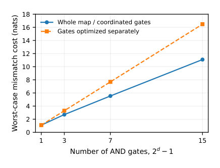
<figcaption class="paper-figure-caption"><b>Fig 1.</b> FIG. 1. Minimax mismatch cost of a depth-d AND tree (d = 1, . . . , 4), computed as one Boolean map using Eq. (13) and gate by gate using Eq. (14). Both grow linearly with the number of gates, with different coefficients because they de- scribe different physical implementations. The gate-by-gate curve is the sum of local gate mismatch costs and is a lower bound when correlations with the rest of the circuit are in- cluded [16].</figcaption>
</figure>
<figure class="paper-figure-card">
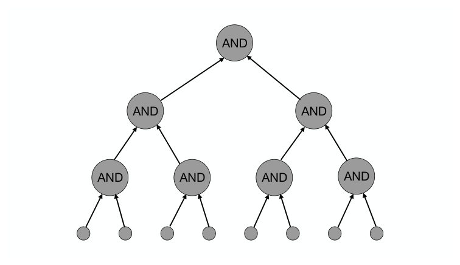
<figcaption class="paper-figure-caption"><b>Fig 2.</b> FIG. 2. A depth-3 binary tree of two-input AND gates. The eight bottom nodes represent the external input bits, and each higher node computes the AND of its two inputs. This figure first appeared in our previous work, Ref. [16].</figcaption>
</figure>
<figure class="paper-figure-card">
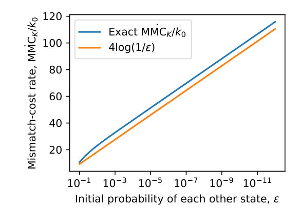
<figcaption class="paper-figure-caption"><b>Fig 3.</b> FIG. 3. Instantaneous mismatch-cost rate for the three-state nonequilibrium steady state in Eq. (S119), with q = πss and p(ϵ)</figcaption>
</figure>
<figure class="paper-figure-card">

<figcaption class="paper-figure-caption"><b>Fig 4.</b> Figure 3 compares the exact rate with 4 log(1/ϵ). The exact rate has the same logarithmic growth and continues to increase as ϵ decreases, making the divergence visible. To understand how this singular instantaneous behavior emerges from finite times, we now study the minimax mis- match cost as the process duration approaches zero. For this short-time analysis we specialize to a time-homogeneous CTMC with Pt = etK. Assume K is irreducible, meaning that every state can be reached from every other state through a sequence of transitions with positive rates. For a finite irreducible continuous-time process, Pt(y|x) &gt; 0 for every x, y and every t &gt; 0. Therefore Pt has one stochastic island....</figcaption>
</figure>
</div>

<p><strong>Summary.</strong> This work develops a framework to calculate the minimax entropy production cost for physical processes, ranging from discrete maps to continuous-time dynamics. It shows that the optimal prior minimizes the worst-case cost, which is governed by the maximum uncertainty remaining after the process. The results provide universal scaling laws for the short-time behavior of this cost in Markovian systems.</p>
<p><strong>Why it may be interesting.</strong> The framework provides a rigorous information-theoretic measure (minimax cost) for quantifying the inherent thermodynamic uncertainty or irreversibility associated with implementing a physical transformation, which has implications for non-equilibrium thermodynamics.</p>
<details>
<summary>Detailed structure</summary>
<p><strong>Main problem.</strong> The paper determines the optimal prior distribution ($q$) for a physical system implementing a given map ($G$) that minimizes the expected thermodynamic cost (Mismatch Cost) in the worst-case scenario over all possible actual input distributions ($p$).</p>
<p><strong>Main result.</strong> For deterministic maps, the minimax cost is determined by the maximum size of the input preimages (islands). For continuous-time dynamics, the instantaneous cost diverges, but the finite-time cost scales universally with the largest escape rate ($\lambda_{\max}$).</p>
<p><strong>Method.</strong> The analysis uses variational principles and bounds on the Mismatch Cost, decomposing the problem across equivalence classes (islands) for discrete maps and employing small-time expansions for continuous-time Markov chains.</p>
<p><strong>Model / system.</strong> The study considers general physical processes modeled by discrete stochastic maps, continuous-time Markov chains (CTMC), and abstract computational circuits (like Boolean gates). The cost function relates to entropy production and mismatch divergence.</p>
<p><strong>Key observables.</strong> Minimax Mismatch Cost ($   ext{F}^*$), Shannon Entropy ($S$), Instantaneous Mismatch Cost Rate ($\dot{MMCA}$), and the maximum escape rate ($\lambda_{\max}$).</p>
<p><strong>Important parameters / regimes.</strong> Time $t$, the maximum escape rate $\lambda_{\max}$, and the size of the largest preimage set $|I_y|$.</p>
<p><strong>Assumptions / limitations.</strong> For continuous time, the analysis assumes the map family $P_t$ is differentiable and the CTMC is irreducible. For discrete maps, the worst-case input is shown to be a point mass.</p>
<p><strong>Figures summary.</strong> Figures illustrate the comparison of minimax costs for different circuit decompositions (AND gates) and show the predicted divergence of the instantaneous mismatch-cost rate for a three-state CTMC.</p>
<p><strong>Paper structure.</strong> The paper progresses from analyzing deterministic maps to stochastic maps, then extends the framework to continuous-time dynamics. It establishes the minimax cost for discrete cases, derives the divergence of the instantaneous rate, and finally solves the short-time limit for CTMCs.</p>
</details>
<details>
<summary>Abstract</summary>
<p>For any physical process, varying the initial distribution over its states will change the resulting expected entropy production (EP). An initial distribution that minimizes the EP of a particular process is called the prior of that process. Varying the microphysical details of the process will change its prior.We consider the following question: if an engineer wants to design a system to implement a given map, what prior should they design into the system to minimize the EP for the worst-case actual distribution? We derive the closed-form solution to this problem when the map is deterministic. We also show that for stochastic maps, a worst-case actual distribution can always be chosen to be a point mass on a single state, and that the associated minimax prior resembles a Boltzmann-Gibbs equation, and can be found by a globally convergent numerical algorithm. We also show that the associated minimax mismatch cost is the maximum uncertainty about the input that remains after observing the output. Finally, we extend the analysis to the continuous-time regime, showing that the minimax instantaneous mismatch-cost diverges, while the corresponding finite-time minimax mismatch cost has a universal short-time scaling set by the largest escape rate of the dynamics.</p>
</details>
<p><sub><a href="#top">↑ back to top</a></sub></p>

<p><a id="paper-2610.03669"></a></p>
<h3 id="optimal-kernel-functions-for-linear-combination-of-hamiltonian-simulation"><a href="http://arxiv.org/abs/2610.03669v1">Optimal kernel functions for linear combination of Hamiltonian simulation</a></h3>
<p><strong>Authors:</strong> Harriet Apel, Bjorn K. Berntson<br>
<strong>Type:</strong> theory · <strong>Category:</strong> quantum information and computing · <strong>PDF:</strong> <a href="https://arxiv.org/pdf/2610.03669v1">https://arxiv.org/pdf/2610.03669v1</a><br>
<strong>Analysis basis:</strong> full PDF text, analyzed in chunks
<strong>Topic relevance:</strong> <code>Keldysh / 2PI / non-Gaussian methods</code> <strong>2/5</strong> · <code>methods for driven-dissipative</code> <strong>2/5</strong> · <code>analog quantum simulation</code> <strong>1/5</strong> · <code>correlated / nonlocal dissipation</code> <strong>1/5</strong> · <code>driven-dissipative phase transition</code> <strong>1/5</strong> · <code>non-equilibrium universality</code> <strong>1/5</strong> · <code>quantum measurements</code> <strong>1/5</strong></p>
<div class="figure-strip-hint">↔ Scroll figures horizontally</div>
<div class="paper-figures-scroll">
<figure class="paper-figure-card">
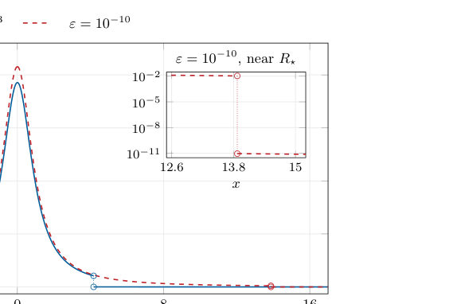
<figcaption class="paper-figure-caption"><b>Fig 1.</b> Figure 1: Moduli of the optimal kernel function boundary values (25) with error parameters ε = 10−3 and 10−10. The main plot has a linear vertical scale; the insets use logarithmic vertical scales to resolve the jumps at R⋆(ε) ≈4.172 and 13.872, respectively. The negative endpoints follow from the fact that |f⋆,0(x)| is even. Open circles denote one-sided modulus limits, and dotted segments are guides to the eye. The insets display the nonzero exterior tails.</figcaption>
</figure>
</div>

<p><strong>Summary.</strong> This paper develops a mathematically rigorous theory for optimizing the kernel function used in Linear Combination of Hamiltonian Simulation (LCHS). By applying Hardy space theory and complex analysis, the authors determine the minimum achievable query cost for simulating non-unitary quantum dynamics. This establishes a provably optimal resource scaling for quantum simulation protocols.</p>
<p><strong>Why it may be interesting.</strong> This work provides rigorous, mathematically optimal bounds for simulating open quantum systems or non-unitary dynamics, which is crucial for designing resource-efficient quantum algorithms and quantum control protocols.</p>
<details>
<summary>Detailed structure</summary>
<p><strong>Main problem.</strong> The paper aims to characterize the optimal kernel function required for the Linear Combination of Hamiltonian Simulation (LCHS) method to achieve asymptotically optimal quantum simulation of linear non-unitary dynamics.</p>
<p><strong>Main result.</strong> They establish an LCHS approximation theorem and derive the asymptotic cost scaling for the minimum query-cost functional, showing an improvement factor of $\approx 2.1$ over previous empirical bounds.</p>
<p><strong>Method.</strong> The work employs advanced mathematical tools, including Hardy space theory, convex analysis, and complex contour integration, to solve an infinite-dimensional optimization problem.</p>
<p><strong>Model / system.</strong> The model involves simulating quantum dynamics governed by linear, time-dependent, potentially non-Hermitian matrices, $A(t)$, whose evolution is described by the Peano–Baker propagator. The simulation is approximated via the LCHS framework.</p>
<p><strong>Key observables.</strong> The primary observable is the minimum value of the query-cost functional, which scales asymptotically as $\log(1/\epsilon) - \log\log(1/\epsilon)$.</p>
<p><strong>Important parameters / regimes.</strong> The target error ($\epsilon$) is the key parameter driving the asymptotic analysis, as well as the time-dependent matrices $L(t)$ and $H(t)$.</p>
<p><strong>Assumptions / limitations.</strong> The analysis relies heavily on the properties of Hardy spaces ($H^1$) and the assumption that the error bound $E_{R,y_0}[f]$ is finite.</p>
<p><strong>Paper structure.</strong> The paper progresses by first defining the LCHS framework and the optimization problem (Problem 5), then proving the existence and uniqueness of the optimal kernel function (Theorem 6), followed by rigorous analysis of the resulting cost scaling and the construction of a spectrally convergent quadrature rule (Theorem 8).</p>
</details>
<details>
<summary>Abstract</summary>
<p>Linear combination of Hamiltonian simulation (LCHS) provides an asymptotically optimal framework for the quantum simulation of linear non-unitary dynamics. The LCHS approach approximately implements the Peano--Baker propagator through an integral representation determined by a kernel function. We establish an LCHS approximation theorem for a broadened class of admissible kernel functions, defined by natural complex-analytic conditions. In the standard time-independent block-encoding access model, we explicitly construct, for each target error $\varepsilon$, the unique kernel function in this class minimizing the query-cost functional and show that the minimum of this functional has the asymptotic expansion $\tfrac{2\mathrm{e}}π\big(\log\frac{1}{\varepsilon}-\log\log\frac{1}{\varepsilon}+o(1)\big)$ as ${\varepsilon\downarrow0}$. The provably optimal leading coefficient $2\mathrm{e}/π$ improves by a factor of approximately 2.1 on the coefficient obtained empirically by Low and Somma through numerical minimization over their family of optimally scaling kernel functions. We construct a spectrally convergent quadrature with explicit bounds on operator error and linear combination of unitaries (LCU) subnormalization, proving that this asymptotic improvement persists after discretization into a finite linear combination of unitaries suitable for implementation. Our results are based on Hardy space theory and convex analysis.</p>
</details>
<p><sub><a href="#top">↑ back to top</a></sub></p>

<p><a id="paper-2610.03318"></a></p>
<h3 id="beyond-pure-dephasing-quantum-error-correction-in-single-molecules-requires-multiple-spins"><a href="http://arxiv.org/abs/2610.03318v1">Beyond Pure Dephasing: Quantum Error Correction in Single Molecules Requires Multiple Spins</a></h3>
<p><strong>Authors:</strong> Matteo Mezzadri, Silvia Macedonio, Luca Lepori, Emilio Macaluso, Francesco Albarelli, Richard E. P. Winpenny, Alessandro Chiesa, Stefano Carretta1<br>
<strong>Type:</strong> theory · <strong>Category:</strong> quantum information and computing · <strong>PDF:</strong> <a href="https://arxiv.org/pdf/2610.03318v1">https://arxiv.org/pdf/2610.03318v1</a><br>
<strong>Analysis basis:</strong> full PDF text, analyzed in chunks
<strong>Topic relevance:</strong> <code>correlated / nonlocal dissipation</code> <strong>2/5</strong> · <code>analog quantum simulation</code> <strong>1/5</strong> · <code>driven-dissipative phase transition</code> <strong>1/5</strong> · <code>methods for driven-dissipative</code> <strong>1/5</strong> · <code>quantum measurements</code> <strong>1/5</strong></p>
<div class="figure-strip-hint">↔ Scroll figures horizontally</div>
<div class="paper-figures-scroll">
<figure class="paper-figure-card">
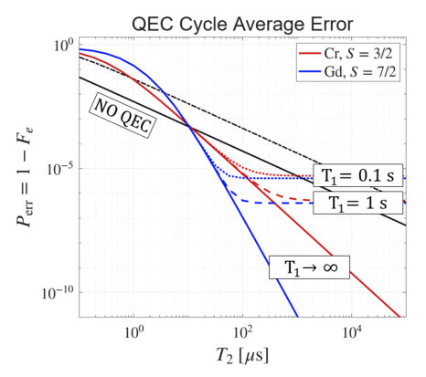
<figcaption class="paper-figure-caption"><b>Fig 1.</b> Figure 1. Average error of a logical rotation followed by syn- drome extraction and recovery, as a function of the dephasing time T2. The error is quantified by the entanglement infidelity Perr = 1 −Fe of the logical channel with respect to the target unitary and is averaged over the universal set of planar logi- cal rotations Rp L(θ, ϕ) = exp[−i(cos ϕ YL−sin ϕ XL)θ/2], with (θ, ϕ) = (π/4, π), (π/2, π), (π/2, −π/2), (π/2, −π/4), and (π/2, −π/8). Red and blue curves correspond to the S = 3/2 Cr complex [31] and to the S = 7/2 Gd complex [32], re- spectively. Solid, dashed, and dotted curves correspond to T1 →∞, T1 = 1 s, and T1 = 100 ms, respectively. For each qudit, the duration of each...</figcaption>
</figure>
<figure class="paper-figure-card">
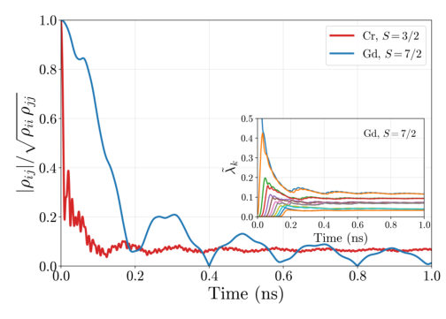
<figcaption class="paper-figure-caption"><b>Fig 2.</b> Figure 2. Relaxation dynamics of electronic spins according to the full Redfield equation. Main panel: time evolution of the normalised transferred coherence |ρij|/√ρiiρjj on the ini- tially empty states, for the two systems of Fig. 1: the red curve corresponds to Cr, D/h = −24.3 GHz, and the blue one to Gd, D/h = 1.28 GHz, illustrating the dependence of the decay on anharmonicity. The transferred coherence is lost within a fraction of a nanosecond, much shorter than the pulse durations reported in Fig. 1. Inset: normalised weights of the Kraus operators, ˜λk = λk/ P</figcaption>
</figure>
<figure class="paper-figure-card">
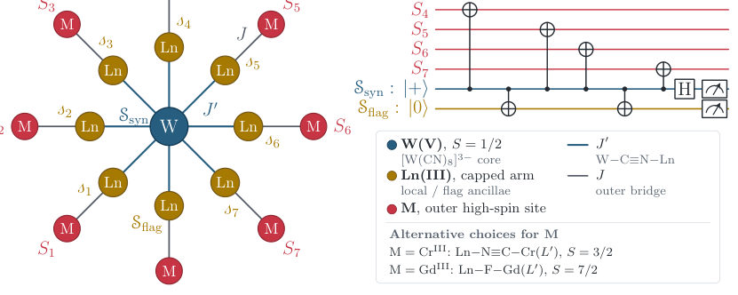
<figcaption class="paper-figure-caption"><b>Fig 3.</b> Figure 3. (a) Scheme of the proposed heptadecanuclear star-shaped molecule [WV(CN)8{LnIII(L)}8{M(L′)}8] implementing the code presented in the paper. Correction against pure dephasing is embedded at the level of each spin Si with ancillary electronic spin si (i=1,...,7) while relaxation is addressed by concatenating these units to implement the 7-qubit Steane code into the reported octagonal structure. An octacyanidotungstate(V) core supplies eight cyanido bridges (blue, exchange coupling J′) to eight capped lanthanide ions, each of which carries one outer high-spin unit M (red, with coupling J). Ln is either GdIII</figcaption>
</figure>
<figure class="paper-figure-card">
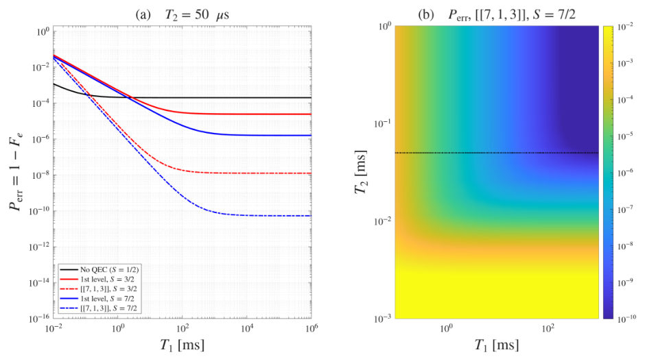
<figcaption class="paper-figure-caption"><b>Fig 4.</b> Figure 4. Ideal performance of the embedded multi-spin code, with Perr = 1 −Fe the entanglement infidelity of the logical Hadamard gate. (a) Perr at fixed T2 = 50 µs, as a function of T1. The black curve is an uncorrected two-level system (no QEC); solid and dashed curves correspond to first-level dephasing correction only and second-level [[7, 1, 3]] concatenation, with red curves for the S = 3/2 CrIII and blue curves for the S = 7/2 GdIII. (b) Perr for the [[7, 1, 3]] code on S = 7/2 as a function of the relaxation time T1 and the dephasing time T2; the dotted black line marks the cut shown in panel (a).</figcaption>
</figure>
</div>

<p><strong>Summary.</strong> This paper proposes a novel, multi-layered quantum error correction protocol for molecular spin systems to achieve fault tolerance. It addresses the limitation of single-spin encoding by combining dephasing-suppressing units with a multi-qubit code to handle residual relaxation errors. The work demonstrates that this hybrid architecture significantly enhances logical error suppression in molecular quantum processors.</p>
<p><strong>Why it may be interesting.</strong> This work directly tackles the physical implementation challenge of QEC in solid-state or molecular platforms, providing a concrete, multi-layered theoretical blueprint for fault tolerance beyond simple decoherence mitigation.</p>
<details>
<summary>Detailed structure</summary>
<p><strong>Main problem.</strong> The primary challenge is achieving fault-tolerant quantum error correction (QEC) in single molecules, specifically addressing residual off-diagonal errors (relaxation) after initial dephasing correction.</p>
<p><strong>Main result.</strong> The authors propose a hybrid encoding scheme using multi-spin molecules, which successfully addresses residual relaxation errors by concatenating dephasing-tolerant units with a second-level multi-qubit code.</p>
<p><strong>Method.</strong> The approach involves a two-stage error correction protocol: first, using embedded codes to suppress pure dephasing, and second, applying a multi-qubit code to handle the remaining off-diagonal relaxation errors.</p>
<p><strong>Model / system.</strong> The system utilizes molecular spin complexes (MNMs) whose spin dynamics are modeled using Hamiltonians and master equations. The error analysis distinguishes between pure dephasing (diagonal) and relaxation (off-diagonal) errors.</p>
<p><strong>Key observables.</strong> Logical error quantified by entanglement infidelity (Perr) and average fidelity (F), and the decay of normalized transferred coherence.</p>
<p><strong>Important parameters / regimes.</strong> The ratio between $T_2$ (dephasing time) and $T_1$ (relaxation time) is critical; the performance is shown to be limited by finite $T_1$.</p>
<p><strong>Assumptions / limitations.</strong> The analysis relies on the secular approximation in the Redfield theory and the assumption that the residual noise channel can be effectively analyzed using Pauli twirling approximations.</p>
<p><strong>Figures summary.</strong> Figures illustrate the error decay as a function of $T_2$, showing saturation to a plateau set by residual relaxation for finite $T_1$. Other figures detail the structure of error channels (Kraus operators) for relaxation-driven errors.</p>
<p><strong>Paper structure.</strong> The paper first establishes the need to move beyond pure dephasing correction. It then details the hybrid encoding strategy, combining dephasing-tolerant units with a multi-qubit code. Finally, it numerically demonstrates the error suppression potential of this multi-spin architecture.</p>
</details>
<details>
<summary>Abstract</summary>
<p>We propose multi-spin molecules as a viable architecture for fault-tolerant quantum computing. To this aim, we introduce a correction protocol handling both diagonal and off-diagonal errors, typically associated with dephasing and relaxation. The scheme is based on a hybrid encoding which combines dephasing-tolerant units suppressing the leading pure dephasing error into a multi-spin molecule implementing a multi-qubit code for residual off-diagonal errors. Our proposal leverages peculiar properties of molecular spins, i.e. the strong hierarchy between different errors and the possibility to engineer multi-spin molecules at the synthetic level. Moreover, it addresses the important issue of the loss of coherences in anharmonic systems subject to off-diagonal errors, which hampers their correction at the single spin level. Thanks to the huge suppression of dephasing by the first-level code, we numerically demonstrate the potential performance of this strategy even with a limited number of spins per logical unit.</p>
</details>
<p><sub><a href="#top">↑ back to top</a></sub></p>

<p><a id="paper-2610.03145"></a></p>
<h3 id="correlated-metals-metamagnetism-and-orbital-nematic-order-in-moire-materials-with-neural-quantum-states"><a href="http://arxiv.org/abs/2610.03145v1">Correlated Metals, Metamagnetism, and Orbital Nematic Order in moiré Materials with Neural Quantum States</a></h3>
<p><strong>Authors:</strong> Wei Zhang, Ataç İmamoğlu, Tao Shi, Eugene A. Demler, Ivan Morera<br>
<strong>Type:</strong> theory · <strong>Category:</strong> strongly correlated electrons · <strong>PDF:</strong> <a href="https://arxiv.org/pdf/2610.03145v1">https://arxiv.org/pdf/2610.03145v1</a><br>
<strong>Analysis basis:</strong> full PDF text, analyzed in chunks
<strong>Topic relevance:</strong> <code>analog quantum simulation</code> <strong>2/5</strong> · <code>Frenkel-Kontorova</code> <strong>1/5</strong> · <code>methods for driven-dissipative</code> <strong>1/5</strong></p>
<div class="figure-strip-hint">↔ Scroll figures horizontally</div>
<div class="paper-figures-scroll">
<figure class="paper-figure-card">
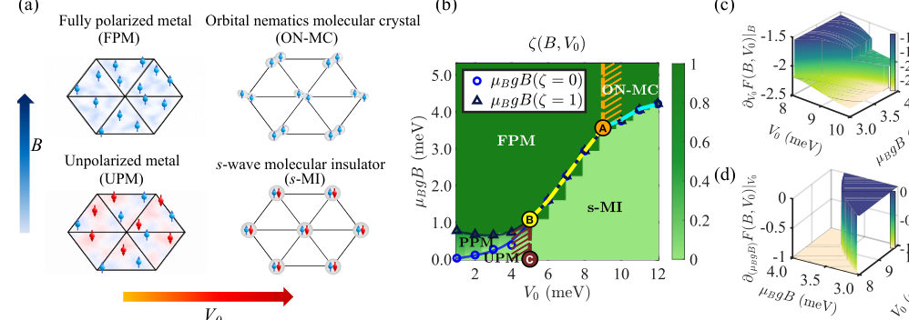
<figcaption class="paper-figure-caption"><b>Fig 1.</b> FIG. 1. Many-body phase diagram and thermodynamic properties obtained for the long-range Coulomb interaction. (a) Schematic illustration of the many-body phases encountered in this work. Upon increasing the moir´e potential strength V0, the system undergoes a metal–insulator transition. The metallic state exhibits a metamagnetic transition at finite magnetic field B, whereas the insulator exhibits a critical magnetic field at which it transitions to an insulator with a reduced symmetry pattern. (b) Phase diagram of the spin polarization ζ in the B–V0 plane. Here, UPM, PPM, and FPM denote the unpolarized (ζ = 0), partially polarized (0 &lt; ζ &lt; 1), and fully polarized (ζ = 1) metallic phases,...</figcaption>
</figure>
<figure class="paper-figure-card">
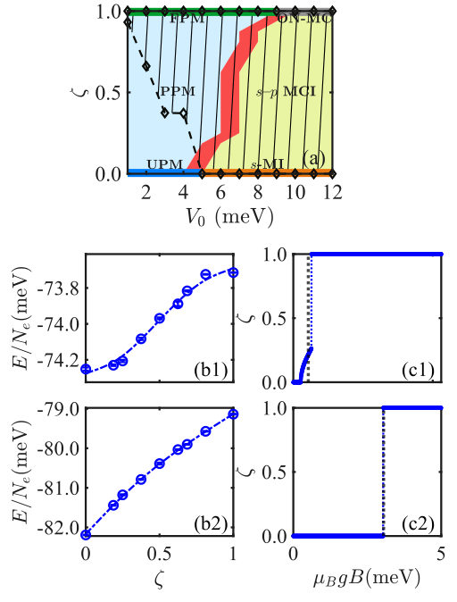
<figcaption class="paper-figure-caption"><b>Fig 2.</b> FIG. 2. (a) Phase diagram in the ζ–V0 plane showing the metal- insulator transition. The hatched area enclosed by black dashed lines denotes the partially polarized region (0 &lt; ζ &lt; 1), which is inaccessible upon increasing the magnetic field B. The red region marks the phase boundary between the metallic and insulating phases. Here, UPM, s-MI, PPM, s–p MCI, FPM, and ON-MC denote the unpolarized metal (blue), s-wave molecular insulator (orange), partially polarized metal (light blue), s–p molecular coexistence insulator (light yellow), fully polarized metal (green), and orbital nematic molecular crystal (gray), respectively. (b1–b2), (c1–c2): The first column shows the energy per particle...</figcaption>
</figure>
<figure class="paper-figure-card">
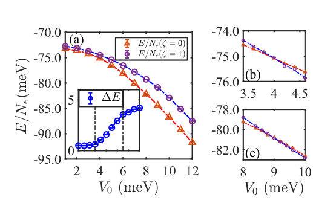
<figcaption class="paper-figure-caption"><b>Fig 3.</b> FIG. 3. (a) Energy per particle E/Ne in the ζ = 0 and ζ = 1 sectors as a function of V0. In the inset, we show the energy difference ∆E = [E(ζ = 1) −E(ζ = 0)]/Ne. The dot-dashed lines in the inset represent the metal–insulator transition points in the ζ = 0 and ζ = 1 sectors, respectively. (b,c) Lowest energies obtained from two-sided annealing for (b) ζ = 0 and (c) ζ = 1. Red (blue) lines denote the insulating (metallic) variational branches. The results shown here are obtained for the Coulomb interaction.</figcaption>
</figure>
<figure class="paper-figure-card">
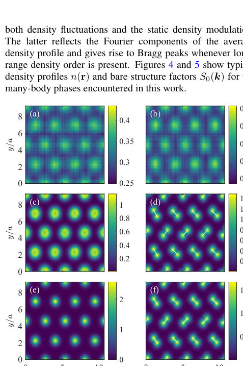
<figcaption class="paper-figure-caption"><b>Fig 4.</b> FIG. 4. Real-space density profiles in the ζ = 0 and ζ = 1 sectors. Panels (a)–(d) show the results for the Coulomb interaction: (a) ζ = 0, V0 = 1 meV; (b) ζ = 1, V0 = 1 meV; (c) ζ = 0, V0 = 11 meV; (d) ζ = 1, V0 = 11 meV. Panels (e) and (f) show the corresponding results for the P¨oschl–Teller (PT) potential with VPT = 5 and κ−1 = a: (e) ζ = 0, V0 = 11 meV; (f) ζ = 1, V0 = 11 meV. For V0 = 1 meV, the density profiles obtained with the PT potential are similar to those obtained with the Coulomb interaction and are therefore not shown. In panels (d) and (f), the quadrupole distribution is also indicated by short white line segments.</figcaption>
</figure>
<figure class="paper-figure-card">
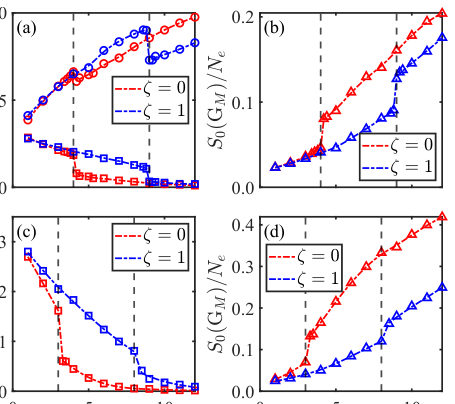
<figcaption class="paper-figure-caption"><b>Fig 5.</b> FIG. 6. Density modulation as a function of the moir´e potential strength V0. (a) Density at the center of a moir´e-potential minimum and the minimum density in the ζ = 0 and ζ = 1 sectors for the Coulomb interaction. (b) The bare structure factor at the moir´e reciprocal lattice vector GM for the Coulomb interaction. (c) Minimum density nmin in the ζ = 0 and ζ = 1 sectors for the P¨oschl–Teller interaction with VPT = 5 and κ−1 = a. In this case, the reduction of the central density nc across the transition is less pronounced, since the p-wave molecular character is not as clearly resolved. Moreover, nc remains much larger than nmin, and is therefore not shown in panel (c). (d) The bare...</figcaption>
</figure>
</div>

<p><strong>Summary.</strong> This work uses advanced quantum simulation techniques (NQS/VMC) to map the phase diagram of interacting electrons in moiré lattices. It reveals that strong correlations fundamentally alter the insulating state, leading to spin-dependent transitions between metallic and molecularly insulating/nematic phases. This highlights the crucial role of spin polarization in determining the ground state of correlated 2D materials.</p>
<p><strong>Why it may be interesting.</strong> The explicit inclusion of spin-dependent transitions and the emergence of orbital nematic order in a correlated electron context provides rich physics relevant to moiré heterostructures and strongly correlated materials.</p>
<details>
<summary>Detailed structure</summary>
<p><strong>Main problem.</strong> The study investigates the interplay between strong electron correlations, external periodic potentials, and spin polarization in two-dimensional electron systems.</p>
<p><strong>Main result.</strong> Strong correlations can suppress the conventional band insulator, leading to a correlated metallic phase, with the transition being highly dependent on spin polarization, resulting in distinct molecular insulating and nematic crystalline states.</p>
<p><strong>Method.</strong> The authors employed Neural Quantum States (NQS) optimized via Variational Monte Carlo to map out the ground-state phase diagram.</p>
<p><strong>Model / system.</strong> The model is a continuum description of 2D electrons interacting via long-range Coulomb forces, subjected to a triangular periodic potential at filling factor $\nu=2$. The analysis is extended to include short-range interactions.</p>
<p><strong>Key observables.</strong> Ground-state phase diagram, magnetization curves, metamagnetic transitions, density profiles, and structure factors.</p>
<p><strong>Important parameters / regimes.</strong> Periodic potential strength ($V_0$), Zeeman field, and spin polarization ($\zeta$).</p>
<p><strong>Assumptions / limitations.</strong> The analysis focuses on the Zeeman effect and uses a continuum model approach to handle strong correlations.</p>
<p><strong>Figures summary.</strong> Not specified.</p>
<p><strong>Paper structure.</strong> The paper develops the phase diagram by analyzing the system's response to varying potential strengths and magnetic fields, contrasting the behavior of unpolarized versus fully polarized states.</p>
</details>
<details>
<summary>Abstract</summary>
<p>In this work, we investigate a continuum model of two-dimensional electrons interacting via long-range Coulomb forces and subject to a triangular periodic potential at filling factor $ν=2$. Using neural quantum states based on message-passing neural networks optimized with variational Monte Carlo, we determine the ground-state phase diagram as a function of periodic potential strength and Zeeman field. Although the noninteracting system is expected to form a conventional band insulator, we show that strong correlations can qualitatively reshape the insulating state and, in part of the phase diagram, suppress the band insulator in favor of a correlated metallic phase, with a first-order transition separating the two regimes. Moreover, the metal--insulator transition exhibits a strong dependence on spin polarization: the unpolarized system becomes insulating at substantially weaker periodic potentials through the formation of an $s$-wave molecular insulator, where opposite-spin electrons bind near each potential minimum, whereas the fully polarized system requires a significantly deeper potential and instead forms a symmetry-broken orbital nematic molecular crystal. This spin-dependent molecular transition gives rise to discontinuous magnetization curves, metamagnetic transitions, and several multicritical points in the phase diagram, together with clear signatures in the density profiles, real-space correlation functions, and structure factors. To further elucidate the role of the long-range character of the Coulomb interaction, we also study short-range repulsive interactions, which can be realized with ultracold-atom platforms. We find that the qualitative structure of the many-body phase diagram remains unchanged, demonstrating the robustness of our results across different interaction models.</p>
</details>
<p><sub><a href="#top">↑ back to top</a></sub></p>

<p><a id="paper-2610.02326"></a></p>
<h3 id="fluctuation-induced-magnetoresistance-in-graphene-hall-bars-at-charge-neutrality"><a href="http://arxiv.org/abs/2610.02326v1">Fluctuation-induced magnetoresistance in graphene Hall bars at charge neutrality</a></h3>
<p><strong>Authors:</strong> Anna Grigoreva, Alex Levchenko, Eleftherios Kirkinis, Anton Andreev<br>
<strong>Type:</strong> theory · <strong>Category:</strong> other · <strong>PDF:</strong> <a href="https://arxiv.org/pdf/2610.02326v1">https://arxiv.org/pdf/2610.02326v1</a><br>
<strong>Analysis basis:</strong> full PDF text, analyzed in chunks
<strong>Topic relevance:</strong> <code>Keldysh / 2PI / non-Gaussian methods</code> <strong>2/5</strong> · <code>methods for driven-dissipative</code> <strong>2/5</strong></p>
<div class="figure-strip-hint">↔ Scroll figures horizontally</div>
<div class="paper-figures-scroll">
<figure class="paper-figure-card">
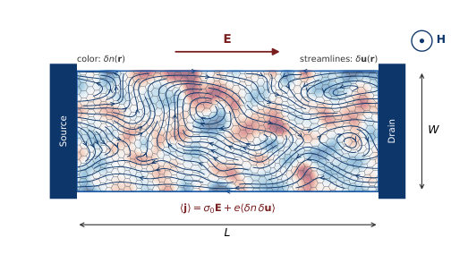
<figcaption class="paper-figure-caption"><b>Fig 1.</b> FIG. 1. Illustration of the fluctuation enhancement of the macro- scopic conductivity of a graphene Hall bar of length L and width W in a perpendicular magnetic field H. The color shows a snapshot of the thermal charge-density fluctuation δn(r) generated by the John- son–Nyquist current noise. The streamlines show the hydrodynamic flow δu(r) induced by the charge density fluctuations in the pres- ence of a bias field E. The correlated advection e⟨δnδu⟩increases the transport current through the device.</figcaption>
</figure>
<figure class="paper-figure-card">
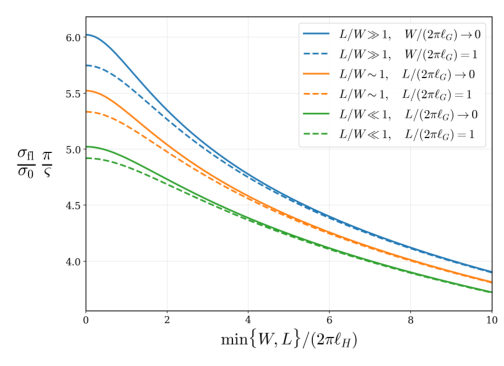
<figcaption class="paper-figure-caption"><b>Fig 2.</b> FIG. 2. Fluctuation conductivity of long (blue), square (orange), and wide (green) samples, given by Eqs. (23), (24), and (25) is plotted as a function of H/Hsize = min{W, L}/(2πℓH). The solid lines corre- spond to pristine samples, min{W, L}/2πℓG →0, and the dashed lines correspond to weakly disordered samples, min{W, L}/2πℓG = 1. In the plots we set W</figcaption>
</figure>
</div>

<p><strong>Summary.</strong> This work provides a comprehensive theoretical framework for fluctuation-induced magnetoresistance in graphene at charge neutrality. By treating the electron liquid hydrodynamically, the authors derive analytic expressions showing that MR results from the coupling between charge transport and thermal hydrodynamic fluctuations. The results highlight the strong dependence of this effect on the physical geometry of the graphene sample.</p>
<p><strong>Why it may be interesting.</strong> The detailed treatment of non-equilibrium, fluctuation-driven transport phenomena in a 2D Dirac material provides advanced insights into mesoscopic transport physics, relevant for understanding quantum noise effects in solid-state systems.</p>
<details>
<summary>Detailed structure</summary>
<p><strong>Main problem.</strong> The paper develops a quantitative theory to explain the fluctuation-induced magnetoresistance (MR) observed at the charge neutrality point in graphene Hall bars.</p>
<p><strong>Main result.</strong> The MR is shown to arise from the coupling between charge transport and hydrodynamic flow fluctuations, yielding functional dependencies sensitive to the Hall bar geometry and magnetic field strength.</p>
<p><strong>Method.</strong> The analysis employs the hydrodynamic approximation, solving coupled Langevin-Navier-Stokes equations for density and velocity fluctuations in Fourier space.</p>
<p><strong>Model / system.</strong> The system is graphene, modeled as an electron liquid exhibiting hydrodynamic behavior when electron-electron collision rates exceed momentum relaxation rates. The geometry is a Hall bar of width W and length L.</p>
<p><strong>Key observables.</strong> Magnetoresistance (MR), fluctuation conductivity ($\sigma_{fl}$), and the dependence of MR on the magnetic field $H$ and geometry.</p>
<p><strong>Important parameters / regimes.</strong> The ratio of collision rates ($ au_{ee}^{-1} &gt; \gamma_p$), the magnetic length ($\ell_H$), the aspect ratio ($W/L$), and the disorder strength ($\ell_G$).</p>
<p><strong>Assumptions / limitations.</strong> The theory relies on the hydrodynamic regime ($  au_{ee}^{-1} &gt; \gamma_p$) and linear response theory applied to fluctuation sources (Johnson-Nyquist noise).</p>
<p><strong>Figures summary.</strong> Figures illustrate the charge-density fluctuations and induced hydrodynamic flow in the Hall bar setup, showing $\sigma_{fl}(H)$ dependence on geometry and disorder.</p>
<p><strong>Paper structure.</strong> The paper progresses from establishing the hydrodynamic framework and the origin of the advection term in the current, to solving the linearized fluctuation equations in Fourier space, and finally deriving asymptotic forms for $\sigma_{fl}$ in finite geometries.</p>
</details>
<details>
<summary>Abstract</summary>
<p>In the temperature interval $T\sim 50 - 100 K$, the rate of electron-electron collisions in graphene devices may exceed the momentum relaxation rate due to disorder and electron-phonon scattering. In this regime, the motion of the electron liquid may be described by the hydrodynamic equations. In the hydrodynamic approximation, at the charge neutrality point the electric current is decoupled from the hydrodynamic flow, and the conductivity of the system is equal to the intrinsic conductivity of the electron liquid, $σ_0$. It was recently shown that the coupling of charge transport and hydrodynamic flow induced by the thermal fluctuations enhances the macroscopic conductivity of the system and results in very strong positive magnetoresistance (MR) at relatively weak fields. Here we develop a quantitative theory of the fluctuation mechanism of MR at charge neutrality and obtain analytic expressions for MR in graphene Hall bars. The functional dependence of MR on the magnetic field $H$ is sensitive to the Hall bar geometry and orientation relative to the current. We also account for the effect of momentum relaxation on MR.</p>
</details>
<p><sub><a href="#top">↑ back to top</a></sub></p>

<p><a id="paper-2610.03399"></a></p>
<h3 id="optimizing-quantum-error-correction-through-error-attribution"><a href="http://arxiv.org/abs/2610.03399v1">Optimizing quantum error correction through error attribution</a></h3>
<p><strong>Authors:</strong> Yuguo Shao, Zi-Wen Liu<br>
<strong>Type:</strong> theory · <strong>Category:</strong> quantum information and computing · <strong>PDF:</strong> <a href="https://arxiv.org/pdf/2610.03399v1">https://arxiv.org/pdf/2610.03399v1</a><br>
<strong>Analysis basis:</strong> full PDF text, analyzed in chunks
<strong>Topic relevance:</strong> <code>QC/QI experiment</code> <strong>2/5</strong> · <code>methods for driven-dissipative</code> <strong>1/5</strong> · <code>quantum measurements</code> <strong>1/5</strong></p>
<div class="figure-strip-hint">↔ Scroll figures horizontally</div>
<div class="paper-figures-scroll">
<figure class="paper-figure-card">
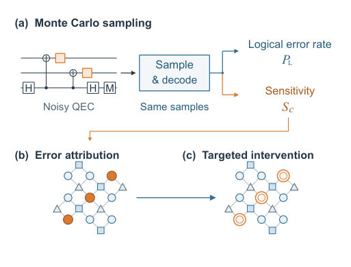
<figcaption class="paper-figure-caption"><b>Fig 1.</b> Figure 1. Error attribution framework for optimizing quantum er- ror correction. (a) The logical error rate PL and its sensitivities Sc to component noise strengths are estimated jointly from the same Monte Carlo samples. (b) The resulting sensitivity map identifies hotspots (orange), highlighting physical components with large sen- sitivity magnitudes and thus a strong influence on the logical error rate. (c) These hotspots guide targeted noise reduction to improve logical performance under a limited intervention budget.</figcaption>
</figure>
<figure class="paper-figure-card">
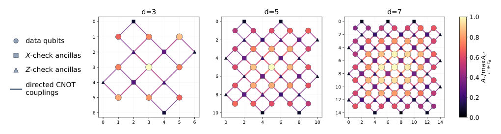
<figcaption class="paper-figure-caption"><b>Fig 2.</b> Figure 2. Physical component hotspot maps for rotated surface code memories at p = 0.001 and d syndrome rounds. The color of each component encodes its within-distance relative sensitivity e A(d) c = Ac/ maxc′∈Cd Ac′, where Ac = (SX c + SZ c )/2 is the sensitivity magnitudes averaged over the X- and Z-memory, and Cd is the component set of the distance-d circuit. The color bar is therefore shared across all panels and spans [0, 1]. Circles denote data qubits, squares X-check ancillas, triangles Z-check ancillas, and links denote directed CNOT couplings.</figcaption>
</figure>
<figure class="paper-figure-card">
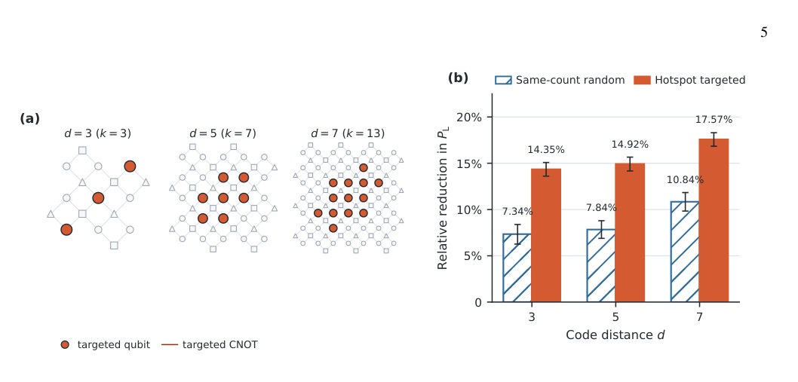
<figcaption class="paper-figure-caption"><b>Fig 3.</b> Figure 3. Hotspot-guided targeted intervention at p = 0.001. (a) The k components with the highest sensitivities on physical layouts. Gray marks and links show the qubits and nearest-neighbor coupling graph; marker shapes follow Fig. 2. Orange filled marks denote the components with the highest sensitivities. The sets contain k = 3 (7.32%), 7 (5.43%), and 13 (4.91%) components at d = 3, 5, and 7, respectively. (b) Relative logical error rate reduction with respect to the circuit without intervention. Orange bars show the reduction from hotspot-guided intervention, while blue hatched bars show the mean reduction from random intervention over 40 sets of k components chosen uniformly at...</figcaption>
</figure>
<figure class="paper-figure-card">
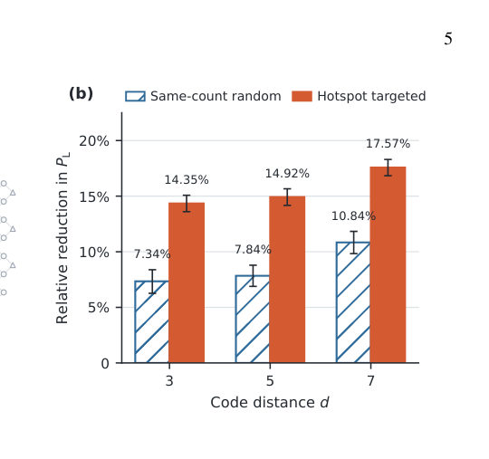
<figcaption class="paper-figure-caption"><b>Fig 4.</b> Fig. 3 shows the comparison results. Relative to the circuit without intervention, the hotspot-guided intervention reduces the logical error rates by 14.35%, 14.92%, and 17.57% for d = 3, 5, 7, respectively. For comparison, applying the same intervention to the same number of physical components se- lected uniformly at random reduces the logical error rates by 7.34%, 7.84%, and 10.84% on average for d = 3, 5, 7, respec- tively. The corresponding improvement ratio is I = ∆t/∆r, where ∆t and ∆r denote the targeted and mean random reduc- tions, respectively. The estimated ratios are 1.95 [95% confi- dence interval (CI), 1.72–2.26] at d = 3, 1.90 [1.71–2.14] at d = 5, and 1.62 [1.49–1.77] at d...</figcaption>
</figure>
<figure class="paper-figure-card">
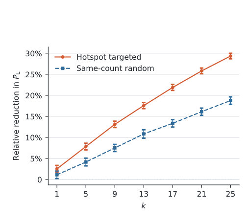
<figcaption class="paper-figure-caption"><b>Fig 5.</b> Figure 4. Relative logical error rate reduction versus intervention budget. The d = 7 rotated surface code circuit contains 265 physical components and uses seven syndrome rounds at p = 0.001. Orange circles show the reduction from hotspot-guided intervention, while blue squares show the mean reduction from random intervention over 40 sets of k components chosen uniformly at random. The local error rate of each selected component is reduced by a fraction α = 0.5. Error bars indicate 95% bootstrap confidence intervals.</figcaption>
</figure>
</div>

<p><strong>Summary.</strong> This paper introduces an error attribution scheme to diagnose which physical noise sources most critically impact the logical error rate in quantum error correction codes. By quantifying the sensitivity of the logical failure rate to individual noise components, the authors identify 'hotspots' in the error circuit. Targeting noise reduction efforts on these few critical components yields substantial, non-trivial improvements in QEC performance compared to random efforts.</p>
<p><strong>Why it may be interesting.</strong> This work provides a practical, data-driven optimization tool for QEC hardware design, moving beyond simple benchmarking to guide resource allocation for maximum performance gain.</p>
<details>
<summary>Detailed structure</summary>
<p><strong>Main problem.</strong> The paper addresses the limitation of using the aggregate logical error rate in Quantum Error Correction (QEC) by developing a method to pinpoint which specific physical noise components contribute most significantly to overall failure.</p>
<p><strong>Main result.</strong> Targeted noise reduction on the top 5%-7% of most sensitive physical components can reduce the logical error rate by 14%-25%, significantly outperforming interventions on the same number of randomly selected components.</p>
<p><strong>Method.</strong> An error attribution scheme is introduced to calculate the sensitivity of the logical error rate to individual noise strengths, using joint estimation from Monte Carlo samples to identify 'hotspots' in the error circuit.</p>
<p><strong>Model / system.</strong> The study applies this framework to simulate QEC circuits, specifically using rotated surface codes and high-rate lifted product codes, which are modeled under a stochastic error framework.</p>
<p><strong>Key observables.</strong> Logical error rate (P_L), component sensitivities (S_alpha), and linearized marginal risk (R_alpha).</p>
<p><strong>Important parameters / regimes.</strong> Noise strengths (lambda), code distances (d=3, 5, 7), and the fraction of components targeted for intervention (e.g., 5%-7%).</p>
<p><strong>Assumptions / limitations.</strong> The method assumes mutual independence of elementary noise components and relies on a linearized approximation of the marginal risk.</p>
<p><strong>Figures summary.</strong> Figures illustrate the error attribution framework, showing sensitivity maps that highlight 'hotspots' (critical components) and comparing the reduction in P_L achieved by targeting these hotspots versus random selection.</p>
<p><strong>Paper structure.</strong> The paper first introduces the error attribution framework and its estimators. It then applies this to surface codes, demonstrating that hotspots are pronounced. Finally, it quantifies the performance gains by comparing targeted intervention against random intervention across various code sizes.</p>
</details>
<details>
<summary>Abstract</summary>
<p>Logical error rate is a standard benchmark for quantum error correction, providing an aggregate measure of the overall effect of physical noise. In actual QEC architectures, errors at different circuit locations can have markedly different effects on logical failure even when their probabilities are equal. Here we introduce an error attribution scheme to quantitatively characterize the influence of individual circuit components on the logical error rate and use this refined information to guide targeted intervention and design for improved QEC performance. Our attribution estimator computes all component sensitivities jointly from the same Monte Carlo samples used to estimate the logical error rate. The resulting sensitivity maps identify hotspots where targeted noise reduction can most effectively improve logical performance. We test the scheme in circuit simulations of rotated surface code memories and high-rate lifted product codes: halving the noise strength on about 5\%-7\% of physical components selected by sensitivity reduces logical error rates by approximately 15\%-25\%, roughly twice the mean reduction from the same intervention on an equal number of randomly selected components. By connecting performance benchmarking to targeted optimization, our scheme provides a practical strategy for improving quantum error correction with limited resources.</p>
</details>
<p><sub><a href="#top">↑ back to top</a></sub></p>

<p><a id="paper-2610.02471"></a></p>
<h3 id="robust-constrained-optimization-of-nonequilibrium-casimir-repulsion-in-a-biased-semiconductor-cavity"><a href="http://arxiv.org/abs/2610.02471v1">Robust constrained optimization of nonequilibrium Casimir repulsion in a biased-semiconductor cavity</a></h3>
<p><strong>Authors:</strong> Mohamed R. Khodja, Belkacem E. Khodja<br>
<strong>Type:</strong> theory · <strong>Category:</strong> statistical mechanics · <strong>PDF:</strong> <a href="https://arxiv.org/pdf/2610.02471v1">https://arxiv.org/pdf/2610.02471v1</a><br>
<strong>Analysis basis:</strong> full PDF text, analyzed in chunks
<strong>Topic relevance:</strong> <code>Keldysh / 2PI / non-Gaussian methods</code> <strong>2/5</strong> · <code>methods for driven-dissipative</code> <strong>2/5</strong></p>
<div class="figure-strip-hint">↔ Scroll figures horizontally</div>
<div class="paper-figures-scroll">
<figure class="paper-figure-card">
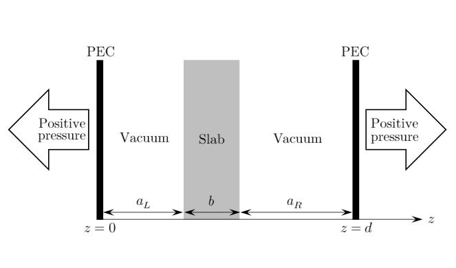
<figcaption class="paper-figure-caption"><b>Fig 1.</b> FIG. 1. PEC–vacuum–biased-semiconductor–vacuum–PEC geometry and sign convention. PL &gt; 0</figcaption>
</figure>
<figure class="paper-figure-card">
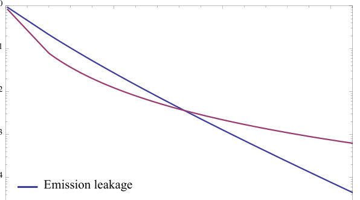
<figcaption class="paper-figure-caption"><b>Fig 2.</b> FIG. 2. Finite-thickness reduction indicators. The adopted b = 13.5 µm is the smallest thickness</figcaption>
</figure>
<figure class="paper-figure-card">
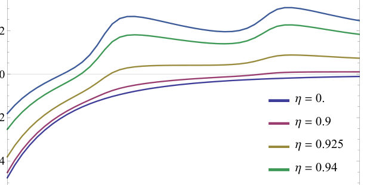
<figcaption class="paper-figure-caption"><b>Fig 3.</b> FIG. 3. Outward pressure on one PEC versus vacuum gap for several drive values η = µγ/Eg.</figcaption>
</figure>
<figure class="paper-figure-card">
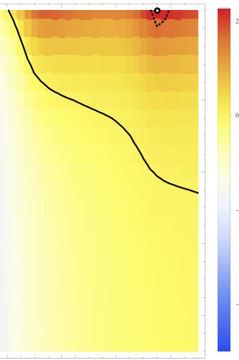
<figcaption class="paper-figure-caption"><b>Fig 4.</b> FIG. 4. Four-corner screening bound for the robust bilateral pressure over the complete (a0, η0)</figcaption>
</figure>
<figure class="paper-figure-card">
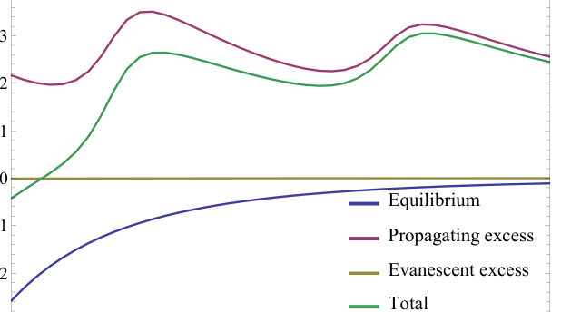
<figcaption class="paper-figure-caption"><b>Fig 5.</b> FIG. 5. Pressure decomposition at η = 0.945. The optimized repulsion is dominated by the</figcaption>
</figure>
</div>

<p><strong>Summary.</strong> This work develops a robust optimization framework to maximize the repulsive Casimir-Lifshitz force generated in a biased semiconductor cavity. By treating the problem as a constrained optimization under fabrication and drive uncertainties, the authors determine optimal cavity parameters. The results establish a design bound for cavity-enhanced repulsion, demonstrating its superiority over simple far-field predictions.</p>
<p><strong>Why it may be interesting.</strong> It provides a quantitative, robust design methodology for generating non-equilibrium forces, bridging quantum electrodynamics (Casimir effect) with semiconductor device physics and optimization theory.</p>
<details>
<summary>Detailed structure</summary>
<p><strong>Main problem.</strong> The paper addresses the challenge of designing a semiconductor cavity to generate a robust, repulsive Casimir-Lifshitz force that remains strong despite uncertainties in fabrication gaps and external drive parameters.</p>
<p><strong>Main result.</strong> The optimized design sustains a worst-case outward pressure of $2.257 	ext{ mPa}$ at $300 	ext{ K}$, which exceeds the corresponding far-field radiation-pressure plateau by a measurable amount.</p>
<p><strong>Method.</strong> The core method is formulating the problem as a robust constrained optimization, maximizing the minimum outward pressure across a defined uncertainty set.</p>
<p><strong>Model / system.</strong> The system is a planar structure consisting of two Perfect Electric Conductors (PECs) flanking a central, biased Gallium Arsenide (GaAs) semiconductor slab, creating a cavity.</p>
<p><strong>Key observables.</strong> Outward outward pressure ($P_L, P_R$), which is decomposed into equilibrium and excess nonequilibrium contributions.</p>
<p><strong>Important parameters / regimes.</strong> Gap uncertainties ($\pm 10 	ext{ nm}$), drive uncertainty ($\pm 0.005$), and the operating temperature ($300 	ext{ K}$).</p>
<p><strong>Assumptions / limitations.</strong> The model assumes the semiconductor response is passive and that the photon chemical potential ($\mu_\gamma$) is spatially uniform over the active regions.</p>
<p><strong>Figures summary.</strong> Figures illustrate the geometry (PEC-vacuum-semiconductor-vacuum-PEC) and show energy-resolved pressure components, while captions detail the selection of slab thickness based on reduction-validity indicators.</p>
<p><strong>Paper structure.</strong> The paper builds the theory by decomposing the total pressure into equilibrium and nonequilibrium parts, develops the robust optimization framework, applies the optimization to find optimal gap sizes, and validates the reduced model against full finite-slab scattering calculations.</p>
</details>
<details>
<summary>Abstract</summary>
<p>Nonequilibrium electromagnetic fluctuations offer a route to repulsive Casimir--Lifshitz forces. However, designs optimized only at nominal conditions may be fragile. We formulate repulsion in a planar PEC--vacuum--biased-GaAs--vacuum--PEC stack as a robust constrained optimization problem. The smaller of the outward pressures on the two conductors is maximized under fabrication and drive uncertainties. In the optically thick-slab limit, we prove that identical boundaries admit a symmetric optimizer, so equality of the optimal gaps emerges from the model rather than being imposed. At $300~\mathrm{K}$, with gap uncertainty of $\pm10~\mathrm{nm}$ and drive uncertainty of $\pm0.005$, the optimized design sustains a worst-case outward pressure of $2.257~\mathrm{mPa}$ and exceeds the corresponding far-field radiation-pressure plateau by $0.1812~\mathrm{mPa}$. At the nominal and active worst-case points, a full finite-slab scattering calculation agrees with the reduced model to within $1.60\times10^{-3}\%$. These results provide a design bound for cavity-enhanced nonequilibrium Casimir--Lifshitz repulsion and show how robust optimization can distinguish cavity enhancement from ordinary far-field radiation pressure.</p>
</details>
<p><sub><a href="#top">↑ back to top</a></sub></p>

<p><a id="paper-2610.02734"></a></p>
<h3 id="smp-a-general-hyperedge-based-framework-for-circuit-level-quantum-error-correction"><a href="http://arxiv.org/abs/2610.02734v1">SMP: A General Hyperedge-Based Framework for Circuit-Level Quantum Error Correction</a></h3>
<p><strong>Authors:</strong> Siying Wang, Yue Yan, Zhixin Xia, Canwei Shi, Hannuo Yuan, Xiang-Bin Wang<br>
<strong>Type:</strong> theory · <strong>Category:</strong> quantum information and computing · <strong>PDF:</strong> <a href="https://arxiv.org/pdf/2610.02734v1">https://arxiv.org/pdf/2610.02734v1</a><br>
<strong>Analysis basis:</strong> full PDF text, analyzed in chunks
<strong>Topic relevance:</strong> <code>QC/QI experiment</code> <strong>2/5</strong> · <code>quantum measurements</code> <strong>2/5</strong></p>
<div class="figure-strip-hint">↔ Scroll figures horizontally</div>
<div class="paper-figures-scroll">
<figure class="paper-figure-card">
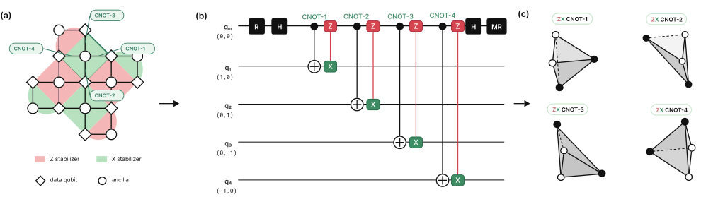
<figcaption class="paper-figure-caption"><b>Fig 1.</b> FIG. 1. Four-detector hyperedges induced by circuit-level faults. (a) Rotated surface code patch. Green and red plaquettes denote X- and Z-type stabilizers, respectively; diamonds denote data qubits and circles denote measurement qubits. The four CNOT gates used to measure the highlighted X-type stabilizer are labeled CNOT-1 through CNOT-4. (b) Circuit for one syndrome extraction round (round 0). The measurement qubit qm at spatial coordinate (0, 0) interacts sequentially with data qubits q1, q2, q3, and q4 at (1, 0), (0, 1), (0, −1), and (−1, 0), respectively. The four ZX markers are alternative single-fault locations: after CNOT-i, a Z error acts on qm and an X error acts on qi, while the...</figcaption>
</figure>
<figure class="paper-figure-card">
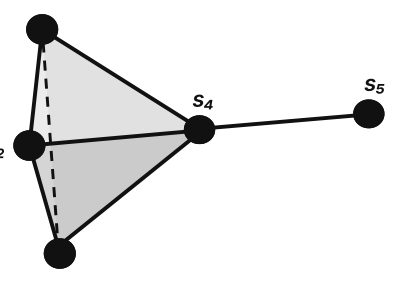
<figcaption class="paper-figure-caption"><b>Fig 2.</b> FIG. 2. Local motif evidence does not determine a complete correction. The labels s1, . . . , s5 denote detector locations with observed detection events. The shaded region highlights a candidate syndrome motif on s1, . . . , s4. Committing those four events to one local correction leaves s5 to be explained by other events or a boundary, neither of which is shown. The connection between s4 and s5 illustrates a competing use of a detector inside the motif. The drawing is schematic and assigns no numerical edge costs.</figcaption>
</figure>
<figure class="paper-figure-card">
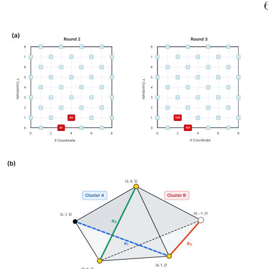
<figcaption class="paper-figure-caption"><b>Fig 3.</b> FIG. 3. Overlapping clusters generated by a single correlated circuit fault. (a) Detector outcomes from a distance-5 sur- face code circuit with r = 5 syndrome extraction rounds. The panels show rounds 2 and 3 under zero-based index- ing. A correlated Z3X12 fault is inserted after the second CX layer of round 2. It triggers D61, D66, D101, and D105. These events form a complete four-detector syndrome motif. (b) The matching graph edge sets defining the two clusters identified by SMP. Their detector graph coordinates (2, 1, 3), (3, 0, 2), (3, 0, 3), and (4, 1, 2) correspond to D105, D61, D101, and D66, respectively. Cluster A has the four-detector sup- port SA = {(2, 1, 3), (3, 0, 2), (3, 0,...</figcaption>
</figure>
<figure class="paper-figure-card">
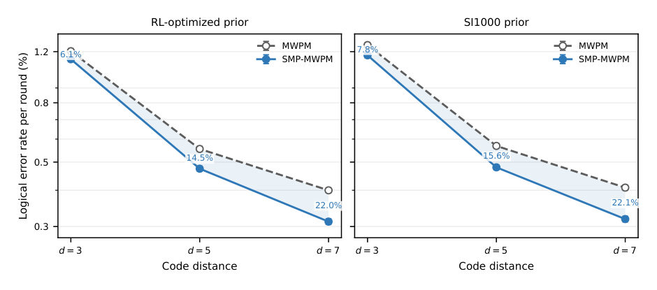
<figcaption class="paper-figure-caption"><b>Fig 4.</b> FIG. 4. Logical error rates per round for MWPM and SMP-MWPM on the Willow data. The panels use the reinforcement- learning-optimized (RL) prior and the SI1000 noise model prior. At each distance, the logical failure probability per memory experiment PL(r) is measured after r = 10, 13, 30, 50 extraction rounds, and the per-round rate ϵ is extracted from Eq. (21). Logical-X and logical-Z data are fitted separately and the resulting rates are averaged. Error bars show 95% intervals obtained from 5,000 parametric bootstrap resamples. Shading marks the gap between the two curves, and labels give the relative reduction R = 1 −ϵSMP/ϵbase, expressed as a percentage. Each input round count contains...</figcaption>
</figure>
<figure class="paper-figure-card">
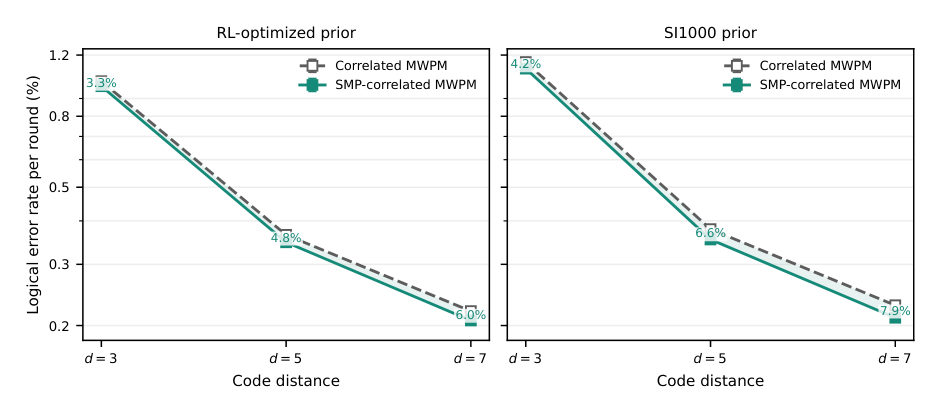
<figcaption class="paper-figure-caption"><b>Fig 5.</b> FIG. 5. Logical error rates per round for correlated MWPM and SMP-correlated MWPM on the Willow data. The panels use the reinforcement-learning-optimized (RL) prior and the SI1000 noise model prior with input round counts r = 10, 13, 30, 50. The per-round rate ϵ is extracted independently for each distance, prior, logical basis, and decoder using Eq. (21). Logical- X and logical-Z rates are averaged after fitting. Error bars show 95% intervals obtained from 5,000 parametric bootstrap resamples. Shading marks the gap between the two curves, and labels give the relative reduction R = 1−ϵSMP/ϵbase, expressed as a percentage. Each input round count contains 50,000 shots per logical basis.</figcaption>
</figure>
</div>

<p><strong>Summary.</strong> This paper introduces Syndrome Motif Projection (SMP), a novel, lightweight framework designed to incorporate complex hyperedge fault information into existing, scalable matching-based quantum error correction decoders. By extracting local syndrome motifs, SMP enhances the ability to detect and correct correlated errors in surface and color codes. The results demonstrate that SMP provides a highly transferable method to boost fault tolerance in real-time quantum computation architectures.</p>
<p><strong>Why it may be interesting.</strong> While focused on QEC, the development of lightweight, information-theoretic preprocessing steps (like motif extraction) that bridge complex physical phenomena (hyperedge faults) into computationally tractable graph structures is relevant to designing efficient control protocols for open quantum systems.</p>
<details>
<summary>Detailed structure</summary>
<p><strong>Main problem.</strong> The primary challenge addressed is accurately decoding hyperedge faults in circuit-level quantum error correction (QEC), as existing fast decoders are limited by pairwise representations.</p>
<p><strong>Main result.</strong> The proposed Syndrome Motif Projection (SMP) framework significantly improves error correction performance across surface and color codes, achieving reductions in logical failure probabilities up to 77.8% and 35.5% compared to baselines.</p>
<p><strong>Method.</strong> SMP is a lightweight front-end that extracts characteristic local syndrome motifs directly from measured syndromes, allowing this higher-order fault information to be incorporated into existing, scalable matching-based decoding algorithms.</p>
<p><strong>Model / system.</strong> The work focuses on circuit-level QEC using stabilizer measurements on physical systems modeled by surface codes and color codes, aiming for fault-tolerant quantum computation.</p>
<p><strong>Key observables.</strong> Logical failure probabilities ($P_L$), performance improvement over belief matching, and the detection of specific syndrome motifs.</p>
<p><strong>Important parameters / regimes.</strong> Physical error probability ($p$), code distance ($d$), and the structure of the fault (edge vs. hyperedge).</p>
<p><strong>Assumptions / limitations.</strong> The core assumption is that the local syndrome motif provides sufficient evidence to effectively update the weights in the matching backend, allowing for a linear-complexity preprocessing step.</p>
<p><strong>Figures summary.</strong> Figure 1 illustrates the structure of hyperedges and the resulting syndrome motifs from circuit-level faults in a surface code patch. Other figures compare the logical failure probabilities of various decoding methods.</p>
<p><strong>Paper structure.</strong> The paper introduces the SMP framework by defining the problem of hyperedge faults, details the mechanism of motif extraction and weight interpolation ($\eta_h$), and validates the approach by demonstrating performance improvements across surface codes, color codes, and logical gate circuits.</p>
</details>
<details>
<summary>Abstract</summary>
<p>Hyperedge faults remain a major challenge in circuit-level quantum error correction. Accurately exploiting hyperedge correlations often requires substantial computational resources, which complicates real-time decoding. Matching-based decoders are fast and scalable, but their pairwise graph representation limits the use of higher-order fault information. Here, we introduce Syndrome Motif Projection (SMP), a general framework for incorporating hyperedge information into matching-based decoding. The key idea is that a hyperedge fault produces a characteristic local syndrome motif. Observing such a motif provides evidence for the corresponding fault. SMP extracts this information directly from the measured syndrome with linear-complexity preprocessing while preserving the matching backend. It can therefore serve as a lightweight front end to existing scalable and real-time matching decoders. We demonstrate SMP across surface code memories, color code memories, and logical gate circuits. On Google's Willow experimental surface code data, SMP improves both standard and correlated matching and outperforms the tested belief matching baseline. For color code memories, SMP combined with Chromobius reduces logical failure probabilities by up to 77.8\%. For logical gate circuits, SMP reduces the failure probability of a six-CNOT circuit by 35.5\% relative to logical observable matching while achieving performance comparable to iterative belief matching. These results demonstrate that SMP provides a lightweight and transferable approach to hyperedge decoding, with a clear path toward integration into scalable real-time decoding architectures for fault-tolerant quantum computation.</p>
</details>
<p><sub><a href="#top">↑ back to top</a></sub></p>

<p><a id="paper-2610.03357"></a></p>
<h3 id="bogoliubov-self-consistent-math523math-and-second-order-greens-function-methods-for-attractive-fermionic-interactions"><a href="http://arxiv.org/abs/2610.03357v1">Bogoliubov self-consistent $GW$ and second-order Green's function methods for attractive fermionic interactions</a></h3>
<p><strong>Authors:</strong> Mauricio Rodr{í}guez-Mayorga, Johannes Tölle, Pierre-François Loos<br>
<strong>Type:</strong> theory · <strong>Category:</strong> strongly correlated electrons · <strong>PDF:</strong> <a href="https://arxiv.org/pdf/2610.03357v1">https://arxiv.org/pdf/2610.03357v1</a><br>
<strong>Analysis basis:</strong> full PDF text, analyzed in chunks
<strong>Topic relevance:</strong> <code>Keldysh / 2PI / non-Gaussian methods</code> <strong>2/5</strong> · <code>analog quantum simulation</code> <strong>1/5</strong></p>
<div class="figure-strip-hint">↔ Scroll figures horizontally</div>
<div class="paper-figures-scroll">
<figure class="paper-figure-card">
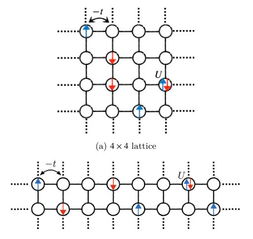
<figcaption class="paper-figure-caption"><b>Fig 1.</b> FIG. 1: Schematic representation of the (a) 4 × 4 and (b) 2 × 8 Hubbard lattices with periodic boundary conditions (dotted lines). The parameter t denotes the nearest-neighbor hopping amplitude between lattice sites, while U represents the on-site interaction between fermions of opposite spin (attractive in the present work). Blue and red arrows depict spin-up and spin-down fermions, respectively.</figcaption>
</figure>
<figure class="paper-figure-card">
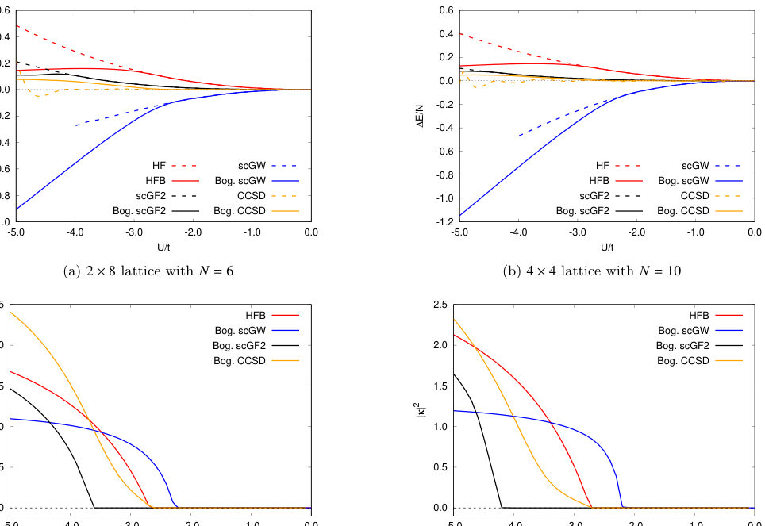
<figcaption class="paper-figure-caption"><b>Fig 2.</b> FIG. 2: Error in the total energy per electron with respect to FCI, ∆E/N = (E −EFCI)/N [(a) and (b)], and magnitude of the anomalous density, ∥κ∥2 [(c) and (d)], versus U/t for the 2 × 8 lattice with N = 6 [(a) and (c)] and the 4 × 4 lattice with N = 10 [(b) and (d)]. The horizontal line in (a) and (b) marks the FCI reference (∆E/N = 0).</figcaption>
</figure>
</div>

<p><strong>Summary.</strong> This work investigates advanced many-body techniques, specifically Bogoliubov self-consistent GW and second-order Green's function methods, to treat attractive fermionic interactions. By benchmarking these methods against the exact Full Configuration Interaction result using the attractive Hubbard model, the authors demonstrate that the GF2 approach is superior to GW, particularly as the attractive interaction strength increases.</p>
<p><strong>Why it may be interesting.</strong> The comparison between GW and GF2 methods for strongly correlated systems provides valuable insight into the relative accuracy of different many-body perturbation theories when dealing with pairing mechanisms relevant to superconductivity.</p>
<details>
<summary>Detailed structure</summary>
<p><strong>Main problem.</strong> The central challenge is accurately describing fermionic systems with attractive interactions, such as superconductors and atomic nuclei, beyond the mean-field level.</p>
<p><strong>Main result.</strong> The second-order Green's function method (Bog. scGF2) was found to provide a more accurate description of correlation energy than the fully self-consistent GW approach (Bog. scGW).</p>
<p><strong>Method.</strong> The authors compare Bogoliubov fully self-consistent GW (Bog. scGW) and second-order Green's function (Bog. scGF2) methods, implemented in a unified imaginary-time and imaginary-frequency framework.</p>
<p><strong>Model / system.</strong> The study uses the attractive Hubbard model as a benchmark system to test the theoretical methods. The formalism builds upon the Hartree–Fock–Bogoliubov (HFB) approach, which is extended to include dynamical correlation effects.</p>
<p><strong>Key observables.</strong> Total energies, anomalous density ($\kappa$), and the generalized (Gorkov) density matrix ($\mathbf{R}$).</p>
<p><strong>Important parameters / regimes.</strong> The strength of the attractive interaction, which is varied to test the stability and accuracy of the methods.</p>
<p><strong>Assumptions / limitations.</strong> The HFB formalism is used as the starting point, which neglects dynamical correlation effects. The GW and GF2 methods are approximations used to recover these missing correlation terms.</p>
<p><strong>Paper structure.</strong> The paper develops the theoretical framework by first establishing the HFB ground state, then introducing the GW and GF2 corrections, and finally comparing their quantitative results against the benchmark FCI calculation.</p>
</details>
<details>
<summary>Abstract</summary>
<p>Describing fermionic systems with attractive interactions, such as superconductors and atomic nuclei, beyond the mean-field level remains a central challenge. In this work, we investigate the performance of Bogoliubov fully self-consistent $GW$ (Bog.~sc$GW$) and second-order Green's function (Bog.~scGF2) methods, implemented within a unified imaginary-time and imaginary-frequency framework. Using the attractive Hubbard model as a benchmark against full configuration interaction (FCI), we find that Bog. scGF2 provides a more accurate description than Bog.~sc$GW$. In particular, Bog.~sc$GW$ systematically overestimates the correlation energy, with errors increasing rapidly as the attractive interaction strength grows. These results highlight the importance of exchange contributions in strongly correlated fermionic systems, even when exchange effects are included only at low order in perturbation theory.</p>
</details>
<p><sub><a href="#top">↑ back to top</a></sub></p>

<p><a id="paper-2610.03528"></a></p>
<h3 id="breaking-the-chain-geometry-native-state-preparation-with-aspire"><a href="http://arxiv.org/abs/2610.03528v1">Breaking the chain: geometry-native state preparation with ASPIRE</a></h3>
<p><strong>Authors:</strong> Fredrik Hasselgren, Matthew L. Sims-Goh<br>
<strong>Type:</strong> theory · <strong>Category:</strong> quantum information and computing · <strong>PDF:</strong> <a href="https://arxiv.org/pdf/2610.03528v1">https://arxiv.org/pdf/2610.03528v1</a><br>
<strong>Analysis basis:</strong> full PDF text, analyzed in chunks
<strong>Topic relevance:</strong> <code>analog quantum simulation</code> <strong>2/5</strong> · <code>methods for driven-dissipative</code> <strong>1/5</strong></p>
<div class="figure-strip-hint">↔ Scroll figures horizontally</div>
<div class="paper-figures-scroll">
<figure class="paper-figure-card">
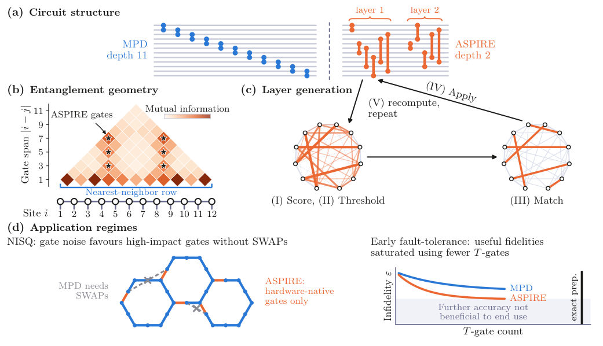
<figcaption class="paper-figure-caption"><b>Fig 1.</b> FIG. 1. Overview of the ASPIRE protocol. (a) Comparison of circuit structure for the MPD [16] (blue) and ASPIRE (orange) at identical budget. The MPD produces sequential ‘staircase’ layers, whereas ASPIRE selects pairs optimised to reduce long-ranged entanglement, parallelised at shallower depth. (b) Pairwise quantum mutual information Equation 8 for the ground state of a 4 × 3 Heisenberg model Equation 26, snake-mapped to an MPS and used to select pairs. Each pair scored is a cell at its MPS site (horizontal) and gate range (vertical); only the bottom row is accessible by standard MPD methods, while the six starred cells are connections only targetable by ASPIRE at ranges 3, 5 and 7 in...</figcaption>
</figure>
<figure class="paper-figure-card">
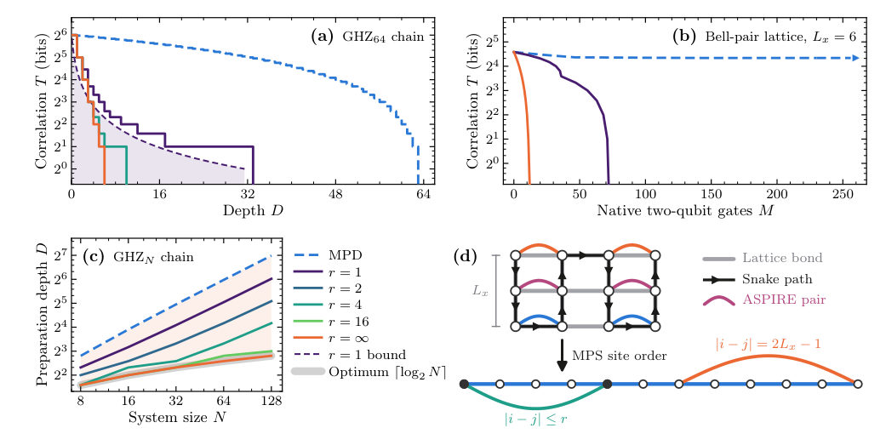
<figcaption class="paper-figure-caption"><b>Fig 2.</b> FIG. 2. A toy model for the impact of better connectivity. Top row: the remaining correlation T is shown as a function of (a) circuit depth for a GHZ64 system and of (b) native gate count for an Lx ×Ly = 6×6 lattice carrying a Bell pair on each vertical bond. For (a) the shaded region is unreachable by nearest-neighbour circuits, with the MPD’s performance shown in dashed blue and ASPIRE at different connectivity radii shown as solid coloured lines. For (b) the Bell pair lattice’s entanglement becomes long-ranged when snake mapped to an MPS, seeing all the Bell pairs only when the connectivity radius reaches 2Lx −1. (c) Depth to exact preparation of the GHZ64, requiring ⌈log2 N⌉layers at...</figcaption>
</figure>
<figure class="paper-figure-card">
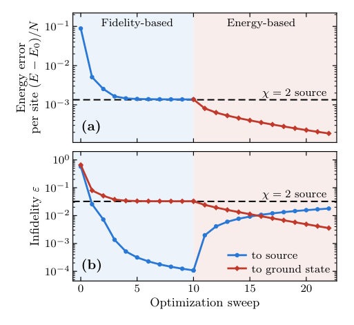
<figcaption class="paper-figure-caption"><b>Fig 3.</b> FIG. 3. Toy model of the energy refinement. A N = 8 critical TFIM ground state is prepared with 21 two-qubit gates via the unitary disentangler protocol from a deliberately crude χ = 2 single-sweep DMRG state. Comparing against E0 from exact diagonalisation (a) Energy error per site, rel- ative to E0 from exact diagonalisation, against optimisation sweep; at sweep 10 the protocol switches from Algorithm 3 to energy refinement. (b) shows the infidelity with respect to the true ground state (red) and the DMRG state (blue), with the same optimisation switch halfway.</figcaption>
</figure>
<figure class="paper-figure-card">
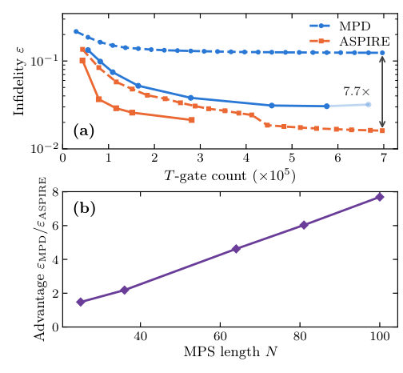
<figcaption class="paper-figure-caption"><b>Fig 4.</b> FIG. 4. 2D TFIM lattice ground-state preparation with MPD and ASPIRE. (a) The MPD (blue) versus AS- PIRE (orange) preparing the 10 × 10 2D TFIM ground state (N = 100 sites, h = 2), both gate-matched at 2376 two-qubit gates and cast onto a fault-tolerant T-gate count with the TRASYN synthesis model [118], the specialised U3 synthesis of Ref. [111], total synthesis error 10−3. Dashed lines are the un- optimised constructions. Solid lines refine the circuit at each marked gate count with Algorithm 3, each point separately and with the same budget of 5 × 1012 bond-resolved χ3 op- erations for both protocols. ASPIRE’s solid line ends at 999 two-qubit gates, beyond which the budget buys less than...</figcaption>
</figure>
<figure class="paper-figure-card">
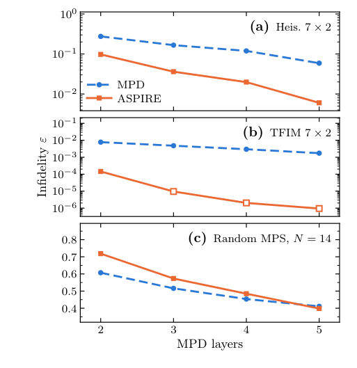
<figcaption class="paper-figure-caption"><b>Fig 5.</b> FIG. 5. Optimisation effectiveness of MPD and AS- PIRE. The infidelity of the protocols optimised to conver- gence at a gate budget of 2 to 5 MPD layers is compared for the 7 × 2 Heisenberg (a) and TFIM (b) ground states, and the N = 14 random MPS with χ = 64 (c), the last a geo- metric mean over three seeds. Hollow markers stopped at the optimiser’s cap of 3 × 104 sweeps and bound the converged infidelity from above.</figcaption>
</figure>
</div>

<p><strong>Summary.</strong> This paper introduces ASPIRE, a novel algorithm for preparing complex quantum states by intelligently selecting gates based on the state's entanglement geometry. It overcomes the limitations of sequential gate application by enabling parallel, long-ranged gate operations. This makes it a resource-frugal protocol highly relevant for near-term quantum hardware simulations.</p>
<p><strong>Why it may be interesting.</strong> The focus on geometry-native state preparation directly addresses practical hardware limitations (connectivity and depth) that are crucial when simulating complex quantum systems relevant to AMO physics.</p>
<details>
<summary>Detailed structure</summary>
<p><strong>Main problem.</strong> Loading quantum states into quantum computers efficiently remains a major bottleneck threatening end-to-end quantum advantage.</p>
<p><strong>Main result.</strong> The proposed ASPIRE protocol achieves higher fidelities and shallower circuits than existing methods for preparing states with long-ranged entanglement, while accounting for hardware connectivity.</p>
<p><strong>Method.</strong> ASPIRE is a greedy classical algorithm that iteratively selects gates by scoring candidate qubit pairs based on the state's underlying entanglement geometry, aiming to remove entanglement in parallel layers.</p>
<p><strong>Model / system.</strong> The focus is on preparing structured quantum states, particularly Matrix Product States (MPS), which are relevant for quantum chemistry and many-body simulation.</p>
<p><strong>Key observables.</strong> Fidelity (ft), circuit depth, entanglement geometry (measured via Quantum Mutual Information, QMI), and gate count.</p>
<p><strong>Important parameters / regimes.</strong> Bond dimension ($\chi$), hardware connectivity, and noise models (NISQ/fault-tolerant).</p>
<p><strong>Assumptions / limitations.</strong> The protocol assumes that minimizing entanglement measures (like QMI) guides the construction of the state-preparation circuit, and it is designed to handle non-1D hardware connectivity.</p>
<p><strong>Figures summary.</strong> Figure 1 compares ASPIRE's circuit structure to existing methods (like MPD), showing ASPIRE's ability to generate parallel layers that target long-ranged entanglement more efficiently.</p>
<p><strong>Paper structure.</strong> The paper introduces ASPIRE as an improvement over sequential nearest-neighbor gate application (like MPD), detailing the use of QMI to guide gate placement and demonstrating its resource-frugal nature across various hardware constraints.</p>
</details>
<details>
<summary>Abstract</summary>
<p>Loading data into quantum computers is a key bottleneck that threatens end-to-end quantum advantage. Quantum-circuit compilers for structured states like matrix product states (MPS) are a critical enabler to manage this in quantum chemistry, finance, and many-body quantum simulation. Approximate preparation of MPS typically relies on layered sequential staircases of nearest-neighbour gates. We present Adaptive State Preparation by Iterative Removal of Entanglement (ASPIRE), an algorithm that approximately compiles state-preparation circuits by selecting gates based on the state's underlying entanglement geometry and the available connectivity of the target quantum processor. Our protocol scores candidate qubit pairs on the removability of their entanglement and identifies layers of parallelised long-ranged gates that remove the most entanglement. We demonstrate our protocol empirically across a range of settings, illustrating its success for preparing Hamiltonian ground states and multivariate amplitude-encoded functions, and accounting for qubit connectivity, hardware noise, and both NISQ and early fault-tolerant settings. Throughout, ASPIRE typically achieves higher fidelities and shallower circuits than existing methods for states with long-ranged entanglement, even when classical optimisation is accounted for. Our investigation positions ASPIRE as a competitive, resource-frugal state-preparation protocol, with particular promise for applications tolerant to imperfect fidelity such as preparation of guide states for quantum phase estimation.</p>
</details>
<p><sub><a href="#top">↑ back to top</a></sub></p>

<p><a id="paper-2610.02757"></a></p>
<h3 id="design-automation-for-gray-code-quantum-read-only-memory"><a href="http://arxiv.org/abs/2610.02757v1">Design Automation for Gray-Code Quantum Read-Only Memory</a></h3>
<p><strong>Authors:</strong> Hao-Yu Lu, Yu-Ting Kao, Yeong-Jar Chang, Chao-Hung Wang, Darsen D. Lu<br>
<strong>Type:</strong> both · <strong>Category:</strong> quantum information and computing · <strong>PDF:</strong> <a href="https://arxiv.org/pdf/2610.02757v1">https://arxiv.org/pdf/2610.02757v1</a><br>
<strong>Analysis basis:</strong> full PDF text, analyzed in chunks
<strong>Topic relevance:</strong> <code>QC/QI experiment</code> <strong>2/5</strong> · <code>quantum measurements</code> <strong>1/5</strong></p>
<div class="figure-strip-hint">↔ Scroll figures horizontally</div>
<div class="paper-figures-scroll">
<figure class="paper-figure-card">
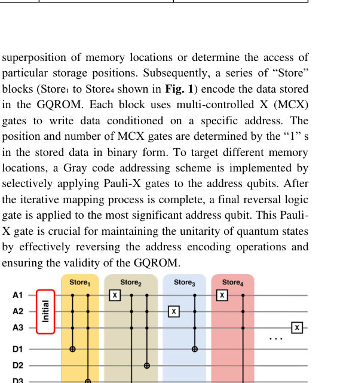
<figcaption class="paper-figure-caption"><b>Fig 1.</b> Fig. 1. Core GQROM circuit block design</figcaption>
</figure>
<figure class="paper-figure-card">
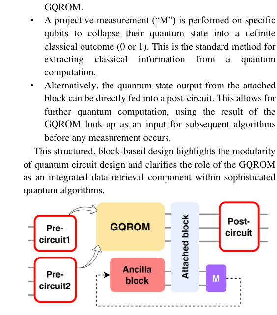
<figcaption class="paper-figure-caption"><b>Fig 2.</b> Fig. 2. System diagram of GQROM with peripheries</figcaption>
</figure>
<figure class="paper-figure-card">
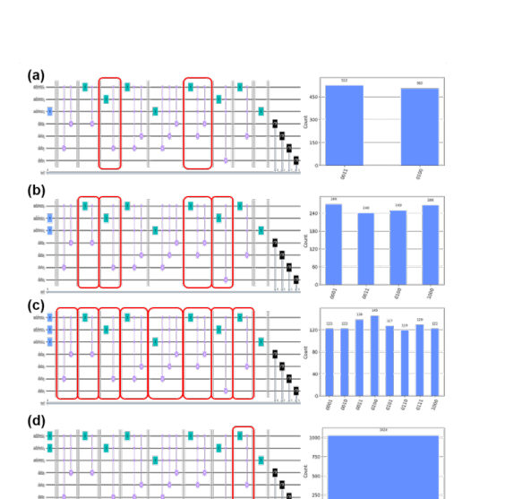
<figcaption class="paper-figure-caption"><b>Fig 3.</b> Fig. 4. GQROM with different “Initial”. (a)(b)(c) 1 or 2 or 3 Hadamard gates are added, respectively. (d) two Pauli-X gate is added. The histograms prove that we can access specified data with different initial setting and create different superposition depending on the applications.</figcaption>
</figure>
<figure class="paper-figure-card">
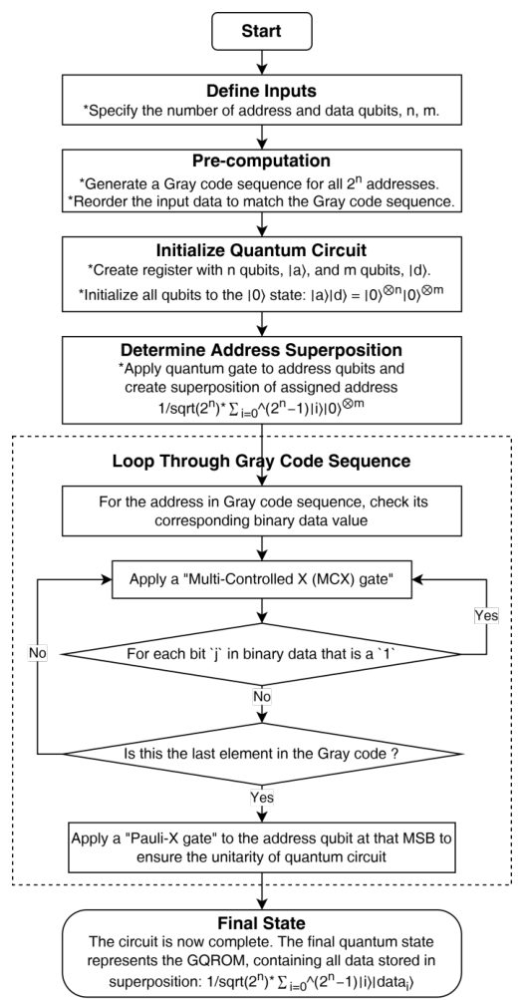
<figcaption class="paper-figure-caption"><b>Fig 4.</b> Fig. 3. Design Flow chart for GQROM</figcaption>
</figure>
</div>

<p><strong>Summary.</strong> This paper introduces GQROM, a novel Quantum Read-Only Memory designed to efficiently load classical data into quantum circuits by employing Gray code encoding. This approach minimizes state transition complexity and reduces gate overhead, addressing key bottlenecks in near-term quantum computing. The design is systematically implemented and validated on the Qiskit platform, proving its practical feasibility for scalable state preparation.</p>
<p><strong>Why it may be interesting.</strong> While focused on digital quantum computation, the principles of efficient state preparation and minimizing gate count through structured addressing (like Gray codes) are crucial for any physical realization of quantum algorithms, including those involving quantum memories.</p>
<details>
<summary>Detailed structure</summary>
<p><strong>Main problem.</strong> The paper addresses bottlenecks in near-term quantum computing caused by inefficient quantum-classical data transfers and initialization overhead.</p>
<p><strong>Main result.</strong> The proposed GQROM architecture successfully demonstrates a resource-optimized, hardware-friendly method for state preparation, significantly reducing required quantum gates.</p>
<p><strong>Method.</strong> The core method involves designing a Quantum Read-Only Memory (QROM) that utilizes Gray code encoding to minimize state transition complexity during data retrieval.</p>
<p><strong>Model / system.</strong> The system is the GQROM, a programmable quantum read-only memory implemented using standard quantum logic gates, including multi-controlled X (MCX) gates, and validated on the Qiskit platform.</p>
<p><strong>Key observables.</strong> Superposition of stored data values, circuit depth, and total required quantum gate count.</p>
<p><strong>Important parameters / regimes.</strong> The use of Gray code encoding, which ensures consecutive addresses differ by only a single bit.</p>
<p><strong>Assumptions / limitations.</strong> The QROM is inherently read-only and is designed to function as a modular component within a larger quantum circuit.</p>
<p><strong>Figures summary.</strong> Figures illustrate the core GQROM circuit block, the overall system diagram with its peripherals, the systematic EDA design flow, and experimental results showing data retrieval under superposition.</p>
<p><strong>Paper structure.</strong> The paper introduces the problem, details the GQROM architecture using Gray code addressing, presents a systematic EDA flow for its construction, and validates its feasibility through simulation results on Qiskit.</p>
</details>
<details>
<summary>Abstract</summary>
<p>We propose a programmable quantum read-only memory based on Gray code encoding, termed GQROM, designed to efficiently load classical data into quantum circuits. This architecture mitigates critical bottlenecks in near-term quantum computing by reducing initialization overhead and gate-induced errors. By utilizing Gray code, in which consecutive addresses differ by only a single bit, GQROM minimizes state transition complexity. We demonstrate the architecture's flexibility in accessing targeted data through initial-state modification. The entire design, including a systematic EDA flow, was implemented and validated on the Qiskit platform, confirming its practical feasibility. These results underscore GQROM's potential as a scalable and hardware-friendly solution for efficient state preparation in quantum circuits.</p>
</details>
<p><sub><a href="#top">↑ back to top</a></sub></p>

<p><a id="paper-2610.03463"></a></p>
<h3 id="generalization-of-transformer-based-neural-quantum-states-via-in-context-learning"><a href="http://arxiv.org/abs/2610.03463v1">Generalization of Transformer-Based Neural Quantum States via In-Context Learning</a></h3>
<p><strong>Authors:</strong> Zhen Qin, Qing Qu, Alfred O. Hero<br>
<strong>Type:</strong> theory · <strong>Category:</strong> numerical methods · <strong>PDF:</strong> <a href="https://arxiv.org/pdf/2610.03463v1">https://arxiv.org/pdf/2610.03463v1</a><br>
<strong>Analysis basis:</strong> full PDF text, analyzed in chunks
<strong>Topic relevance:</strong> <code>methods for driven-dissipative</code> <strong>2/5</strong> · <code>analog quantum simulation</code> <strong>1/5</strong></p>
<div class="figure-strip-hint">↔ Scroll figures horizontally</div>
<div class="paper-figures-scroll">
<figure class="paper-figure-card">
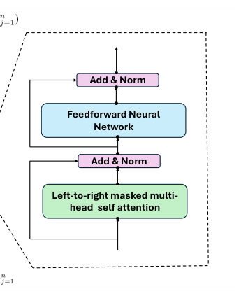
<figcaption class="paper-figure-caption"><b>Fig 1.</b> Figure 1: In-Context Learning Framework for Transformer-Based Neural Quantum States.</figcaption>
</figure>
<figure class="paper-figure-card">
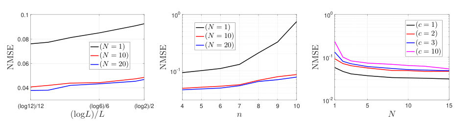
<figcaption class="paper-figure-caption"><b>Fig 2.</b> Figure 2: Comparison of generalization errors of Transformer-based neural quantum states in the continuous case over 500 training epochs with Transformer width 64: (a) varying L and N with n = 4 and c = 2, (b) varying n and N with c = 2 and L = 2, (c) varying c and N with n = 4 and L = 2. These results empirically validate the theoretical scaling law in (19): the generalization error decreases with the number of in-context samples N and increases with the problem dimension n and energy constraint B, while exhibiting an approximately linear dependence on (log L)/L.</figcaption>
</figure>
<figure class="paper-figure-card">
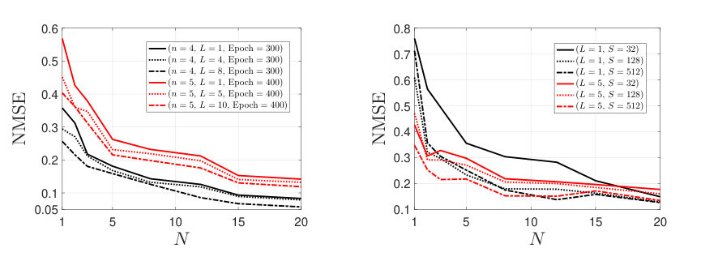
<figcaption class="paper-figure-caption"><b>Fig 3.</b> Figure 3: Comparison of generalization errors of Transformer-based neural quantum states in the discrete case with Transformer width 32: (a) varying n and L with S = 128, (b) varying L and S with n = 5 and 500 training epochs. These results demonstrate that the generalization error decreases with increasing model depth and the number of in- context samples, while increasing with system size n, consistent with the scaling behavior predicted by the theoretical analysis.</figcaption>
</figure>
<figure class="paper-figure-card">
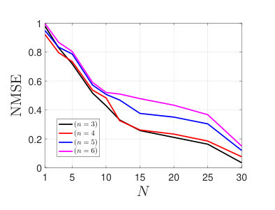
<figcaption class="paper-figure-caption"><b>Fig 4.</b> Figure 4: Comparison of the generalization error for predicting unknown linear observables as the number of qubits n varies. The Transformer width is fixed at 64 and the number of layers is fixed at L = 4. Results are obtained after 300 training epochs (32 batches per epoch) and evaluated on 100 testing tasks. These results demonstrate the predicted benefit of increasing the number of in-context samples N and the increasing difficulty of the prediction task with system size n, consistent with the theoretical bounds in (29) and (30).</figcaption>
</figure>
</div>

<p><strong>Summary.</strong> This paper provides a theoretical framework to analyze the generalization capability of Transformer-based Neural Quantum States (NQS) under in-context learning. It derives rigorous error bounds showing that prediction accuracy improves predictably with more context examples and deeper networks. This advances the field by providing mathematical guarantees for using advanced deep learning architectures to model complex quantum many-body physics.</p>
<p><strong>Why it may be interesting.</strong> This work provides crucial theoretical guarantees for using deep learning models like Transformers to simulate complex quantum many-body systems, addressing a major bottleneck in applying modern AI techniques to quantum physics.</p>
<details>
<summary>Detailed structure</summary>
<p><strong>Main problem.</strong> The paper aims to develop a theoretical understanding of how well Transformer-based neural quantum states generalize when trained using in-context learning (ICL).</p>
<p><strong>Main result.</strong> It establishes rigorous generalization error bounds for the pointwise prediction error and extends this to full quantum states, showing the required Transformer depth scales only linearly with system size.</p>
<p><strong>Method.</strong> The authors develop a theoretical framework using Mean Squared Error (MSE) bounds, adapting the established ICL analysis from language models to the quantum state representation.</p>
<p><strong>Model / system.</strong> The model uses Neural Quantum States (NQS) parameterized by a Transformer architecture to represent quantum many-body wavefunctions. These states can describe both continuous systems (e.g., $\psi(\mathbf{x})$ on $(\mathbb{R}^D)^n$) and discrete systems (e.g., spin systems).</p>
<p><strong>Key observables.</strong> Pointwise prediction error and MSE-based generalization error bounds for the quantum state.</p>
<p><strong>Important parameters / regimes.</strong> The number of in-context examples ($N$) and the depth of the Transformer are key parameters governing the error bounds.</p>
<p><strong>Assumptions / limitations.</strong> The analysis assumes the quantum state can be effectively represented by a Transformer and that the generalization error can be bounded using MSE metrics derived from ICL principles.</p>
<p><strong>Figures summary.</strong> Figure 1 illustrates the entire ICL framework, detailing the flow from input embedding through masked multi-head self-attention and feed-forward layers to the final output prediction.</p>
<p><strong>Paper structure.</strong> The paper first analyzes the pointwise prediction error, deriving bounds based on ICL. It then extends this analysis to full quantum states formulated as rank-one density operators, deriving MSE bounds for both continuous and discrete domains, and concludes with numerical simulations.</p>
</details>
<details>
<summary>Abstract</summary>
<p>Neural quantum states based on modern deep learning architectures have emerged as powerful representations for quantum many-body systems. In particular, Transformer-based neural quantum states provide expressive models capable of capturing long-range correlations, and their empirical generalization performance has recently been demonstrated. However, a theoretical understanding of their generalization behavior remains largely unexplored. In this paper, we develop a theoretical framework to analyze the generalization properties of Transformer-based neural quantum states under in-context learning. We establish a rigorous inference-time generalization error bound in terms of mean squared error (MSE), showing that the pointwise prediction error decreases inversely with both the number of in-context examples and the depth of the Transformer. We further show that the Transformer depth required to achieve this guarantee scales only linearly with the system size--namely, the number of particles in continuous systems or the number of qudits in discrete systems. Building on this result, we extend our analysis to full quantum states formulated as rank-one density operators, and derive MSE-based generalization bounds over both continuous and discrete domains under physical constraints. Finally, numerical simulations corroborate our theoretical analysis.</p>
</details>
<p><sub><a href="#top">↑ back to top</a></sub></p>

<p><a id="paper-2610.03566"></a></p>
<h3 id="gibbs-state-preparation-through-quantum-decoding"><a href="http://arxiv.org/abs/2610.03566v1">Gibbs state preparation through quantum decoding</a></h3>
<p><strong>Authors:</strong> Christophe Piveteau, Yihui Quek, M. Isabel Franco Garrido<br>
<strong>Type:</strong> theory · <strong>Category:</strong> quantum information and computing · <strong>PDF:</strong> <a href="https://arxiv.org/pdf/2610.03566v1">https://arxiv.org/pdf/2610.03566v1</a><br>
<strong>Analysis basis:</strong> full PDF text, analyzed in chunks
<strong>Topic relevance:</strong> <code>analog quantum simulation</code> <strong>2/5</strong> · <code>quantum measurements</code> <strong>1/5</strong></p>
<div class="figure-strip-hint">↔ Scroll figures horizontally</div>
<div class="paper-figures-scroll">
<figure class="paper-figure-card">
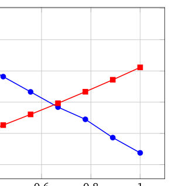
<figcaption class="paper-figure-caption"><b>Fig 1.</b> Figure 1: Numerical evaluation of pDE(q) and pcl(q) for the (3,6)-regular LDPC ensemble. Clearly, for low enough q, pDE(q) is strictly larger than pcl(q). This implies that QD-HDQI to- gether with BPQM can achieve lower temperature for Gibbs sampling than QD-HDQI with any classical decoders for these values of q.</figcaption>
</figure>
</div>

<p><strong>Summary.</strong> This work introduces QD-HDQI, a quantum algorithm that prepares Gibbs states by mapping the problem onto quantum error-correcting codes. By replacing classical decoding with quantum decoding, the authors establish a quantum advantage, showing that quantum methods can reach lower temperatures and overcome classical information-theoretic limits in simulating quantum thermalization.</p>
<p><strong>Why it may be interesting.</strong> The quantum advantage demonstrated in decoding thresholds directly impacts the achievable thermalization temperatures in quantum many-body systems, which is crucial for understanding quantum thermalization dynamics.</p>
<details>
<summary>Detailed structure</summary>
<p><strong>Main problem.</strong> The paper addresses the challenge of efficiently preparing a Gibbs state associated with a Pauli Hamiltonian by reframing the problem as a quantum decoding task.</p>
<p><strong>Main result.</strong> The proposed quantum decoding algorithm (QD-HDQI) demonstrates that quantum decoders can achieve lower temperature limits and surpass classical decoding thresholds, particularly in the noncommuting regime.</p>
<p><strong>Method.</strong> It extends Hamiltonian Decoded Quantum Interferometry (HDQI) by replacing the classical decoder with a quantum decoder that exploits quantum interference between potential errors.</p>
<p><strong>Model / system.</strong> The system involves preparing the Gibbs state $
ho_f$ for a general Pauli Hamiltonian $H$. The methodology maps this state preparation to a quantum decoding problem over associated error-correcting codes.</p>
<p><strong>Key observables.</strong> Achievable inverse temperature ($eta$), decoding threshold ($p^*$), and the error-correcting rate ($R$).</p>
<p><strong>Important parameters / regimes.</strong> The noise model defined by the function $F$, the error fraction, and the Hamiltonian structure (commuting vs. noncommuting).</p>
<p><strong>Assumptions / limitations.</strong> The efficiency of the quantum decoder (e.g., BPQM) and the ability to relate the noise model directly to the decoding problem, bypassing polynomial approximations.</p>
<p><strong>Figures summary.</strong> Not specified.</p>
<p><strong>Paper structure.</strong> The paper introduces the problem, details the QD-HDQI algorithm by replacing classical decoding with quantum decoding, and applies this framework to analyze both commuting and noncommuting Hamiltonian regimes.</p>
</details>
<details>
<summary>Abstract</summary>
<p>We propose a Gibbs state preparation algorithm that exploits algebraic structure in the Hamiltonian. Our starting point is Hamiltonian Decoded Quantum Interferometry (HDQI), a recent algorithm that reduces Gibbs state preparation for Pauli Hamiltonians to decoding error-correcting codes. We introduce quantum decoding HDQI (QD-HDQI), replacing HDQI's coherent classical decoder by a quantum decoder that can exploit interference between different errors.   For commuting Pauli Hamiltonians, our reduction is efficient and the associated quantum decoding problem corresponds to transmitting the associated symplectic code over i.i.d. pure-state classical-quantum channels. For uniformly random Hamiltonian signs, the vanishing-error threshold of an efficient decoder directly determines the lowest temperature that our algorithm can reach. Even using only classical decoders, this improves upon HDQI's achievable inverse temperature from linear to square-root in the correctable error fraction; quantum decoders can improve further by tolerating still stronger noise. A similar picture extends to the noncommuting regime previously handled by HDQI, where now the noise is correlated within small, independent blocks.   We study two such quantum decoders in our QD-HDQI Gibbs sampling framework. The first, based on unambiguous state discrimination, works efficiently for arbitrary binary linear codes. However, we "dequantize" this strategy for commuting Hamiltonians, contributing a classical rejection sampler that matches its temperature threshold. The second is belief propagation with quantum messages (BPQM), a quantum generalization of classical belief propagation. We show that for certain dilute spin glasses, BPQM's decoding threshold exceeds the Shannon limit for classical decoding, reaching temperatures inaccessible to any classical decoder within our framework.</p>
</details>
<p><sub><a href="#top">↑ back to top</a></sub></p>

<p><a id="paper-2610.03578"></a></p>
<h3 id="rapid-mixing-of-gibbs-samplers-via-quantum-dobrushin-shlosman-conditions"><a href="http://arxiv.org/abs/2610.03578v1">Rapid mixing of Gibbs samplers via quantum Dobrushin--Shlosman conditions</a></h3>
<p><strong>Authors:</strong> Cambyse Rouzé, Daniel Stilck França<br>
<strong>Type:</strong> theory · <strong>Category:</strong> statistical mechanics · <strong>PDF:</strong> <a href="https://arxiv.org/pdf/2610.03578v1">https://arxiv.org/pdf/2610.03578v1</a><br>
<strong>Analysis basis:</strong> full PDF text, analyzed in chunks
<strong>Topic relevance:</strong> <code>analog quantum simulation</code> <strong>2/5</strong> · <code>methods for driven-dissipative</code> <strong>1/5</strong></p>
<div class="figure-strip-hint">↔ Scroll figures horizontally</div>
<div class="paper-figures-scroll">
<figure class="paper-figure-card">
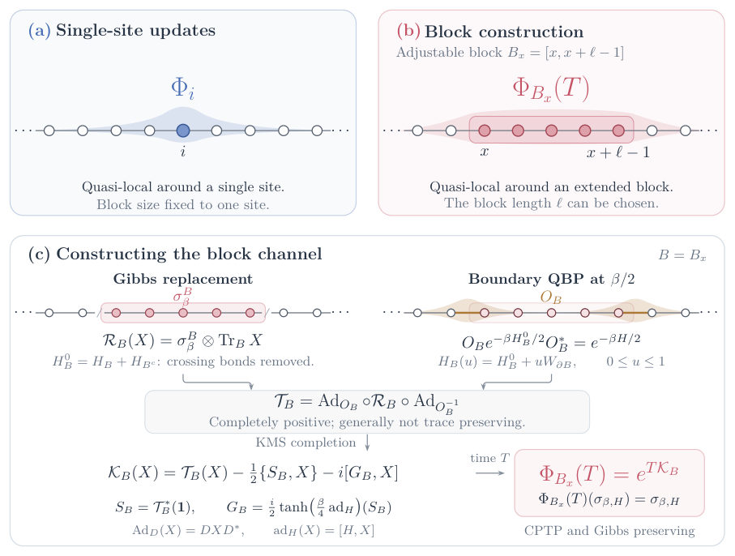
<figcaption class="paper-figure-caption"><b>Fig 1.</b> Figure 1: Single-site and block updates. (a) The channels analyzed in [9, 10] are centered on individual sites. (b) Our channels act around intervals Bx = [x, x + ℓ−1] of adjustable length. The shaded regions indicate decaying spatial tails; neither channel is strictly supported on the highlighted sites. (c) The block construction starts from the Gibbs replacement RB. Writing W∂B = H −H0 B, QBP along HB(u) = H0 B + uW∂B gives the operator OB in (1.1). Dressing RB gives the completely positive map TB. KMS completion then yields the generator KB and the Gibbs-preserving channel ΦB(T). The arrows describe this algebraic construction.</figcaption>
</figure>
<figure class="paper-figure-card">
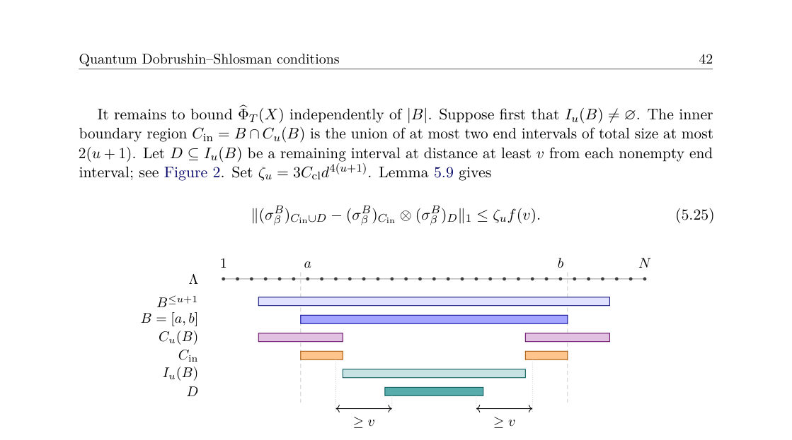
<figcaption class="paper-figure-caption"><b>Fig 2.</b> Figure 2: Regions in the proof of Lemma 5.10, shown for a block away from the ends of the chain. All rows refer to the same sites. The dashed lines mark the boundary bonds of B; Cin = B ∩Cu(B), Iu(B) = B \ Cu(B), and B≤u+1 = B ∪Cu(B). The interval D ⊆Iu(B) is at distance at least v from each component of Cin.</figcaption>
</figure>
</div>

<p><strong>Summary.</strong> This paper extends classical mixing theory to quantum lattice systems by defining a 'quantum Dobrushin–Shlosman condition' for finite-block dynamics. It proves that quantum Gibbs samplers can rapidly mix to the true thermal state using controlled block updates. This has significant implications for designing efficient quantum algorithms to simulate thermal equilibrium in quantum matter.</p>
<p><strong>Why it may be interesting.</strong> This work provides rigorous, quantifiable methods to simulate thermalization processes in quantum many-body systems, which is crucial for understanding quantum thermalization and quantum simulation algorithms.</p>
<details>
<summary>Detailed structure</summary>
<p><strong>Main problem.</strong> The paper aims to extend classical Dobrushin–Shlosman theory to establish rapid mixing guarantees for Gibbs samplers in noncommuting quantum lattice systems.</p>
<p><strong>Main result.</strong> Logarithmic trace-norm mixing is proven for quantum spin chains at fixed finite temperatures, and the quantum Dobrushin–Shlosman condition is shown to be stable under small local perturbations.</p>
<p><strong>Method.</strong> The authors construct 'smoothed heat-bath dynamics' using a combination of local Gibbs resets and quantum belief propagation to define block updates that preserve the Gibbs state.</p>
<p><strong>Model / system.</strong> The focus is on quantum lattice systems, such as quantum spin chains, governed by finite-range Hamiltonians. The target state is the Gibbs state $\sigma_{eta,H} = e^{-eta H} / 	ext{Tr}(e^{-eta H})$.</p>
<p><strong>Key observables.</strong> Trace-norm error ($\varepsilon$), covariance of observables ($   ext{Cov}<em>{\sigma</em>eta}(A, B)$), and the contraction constant $\kappa$ derived from the quantum Dobrushin–Shlosman condition.</p>
<p><strong>Important parameters / regimes.</strong> Inverse temperature ($eta$), block size ($\ell$), evolution time ($T$), and perturbation strength ($\delta$).</p>
<p><strong>Assumptions / limitations.</strong> The analysis relies on the existence of positive-exponent Gibbs operators and the ability to decompose the system into localized neighborhoods (cuts) for bounding correlations.</p>
<p><strong>Figures summary.</strong> Figure 1 illustrates the construction of single-site and block updates, detailing the algebraic steps from Gibbs replacement to the final KMS-reversible channel $\Phi_{B_x}(T)$.</p>
<p><strong>Paper structure.</strong> The paper builds by first establishing bounds on correlations using inclusion-exclusion principles for multiple cuts, then constructing the block update via quantum belief propagation, and finally proving the mixing bounds and stability under perturbations.</p>
</details>
<details>
<summary>Abstract</summary>
<p>Classical Dobrushin--Shlosman theory uses heat-bath block updates to identify sharp temperature thresholds for establishing the rapid mixing of Gibbs samplers. In particular, these mixing guarantees often hold even when stricter single-site conditions fail. We extend this approach to noncommuting quantum lattice systems through a quantum Dobrushin--Shlosman condition for finite-block dynamics, which we call smoothed heat-bath dynamics. We establish this condition in two regimes. For finite-range quantum spin chains at every fixed finite temperature, we prove logarithmic trace-norm mixing in system size, with normalized bounds uniform in on-site fields and single exponential in inverse temperature. We also prove stability under small local perturbations of interacting, possibly noncommuting reference Hamiltonians on graphs of polynomial volume growth. For classical references with bounded local interactions, uniform strong spatial mixing implies our quantum condition. With bounded local terms and fixed physical, geometric and block parameters, the resulting samplers prepare Gibbs states to trace-norm error $\varepsilon$ using $N\operatorname{polylog}(N/\varepsilon)$ gates and classical operations.   Our block updates combine a local Gibbs reset with quantum belief propagation to incorporate interactions across the block boundary, yielding exactly Gibbs-preserving, KMS-reversible channels. Two independently tunable parameters control contraction: an internal evolution time suppresses the influence of sites inside a block, while the block size allows interior contraction to dominate boundary influence. This finite-time relaxation has no counterpart in a classical heat-bath block update.</p>
</details>
<p><sub><a href="#top">↑ back to top</a></sub></p>

<p><a id="paper-2610.02307"></a></p>
<h3 id="a-semiclassical-entanglement-wedge-in-double-scaled-syk"><a href="http://arxiv.org/abs/2610.02307v1">A Semiclassical Entanglement Wedge in Double-Scaled SYK</a></h3>
<p><strong>Authors:</strong> Xi Dong, Jiuci Xu<br>
<strong>Type:</strong> theory · <strong>Category:</strong> statistical mechanics · <strong>PDF:</strong> <a href="https://arxiv.org/pdf/2610.02307v1">https://arxiv.org/pdf/2610.02307v1</a><br>
<strong>Analysis basis:</strong> full PDF text, analyzed in chunks
<strong>Topic relevance:</strong> <code>Keldysh / 2PI / non-Gaussian methods</code> <strong>2/5</strong></p>
<div class="figure-strip-hint">↔ Scroll figures horizontally</div>
<div class="paper-figures-scroll">
<figure class="paper-figure-card">
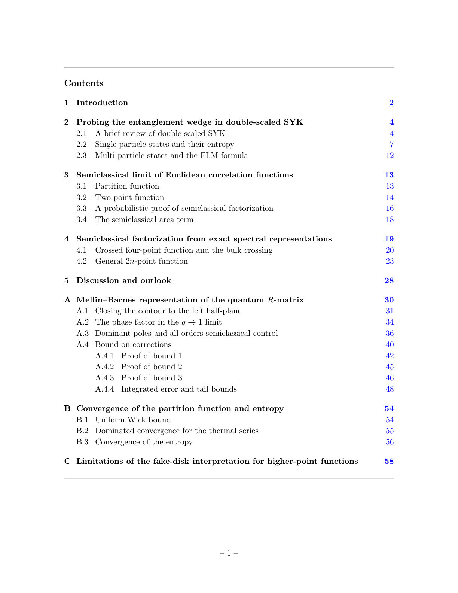
<figcaption class="paper-figure-caption"><b>Fig 1.</b> Low-resolution page preview, page 2</figcaption>
</figure>
<figure class="paper-figure-card">
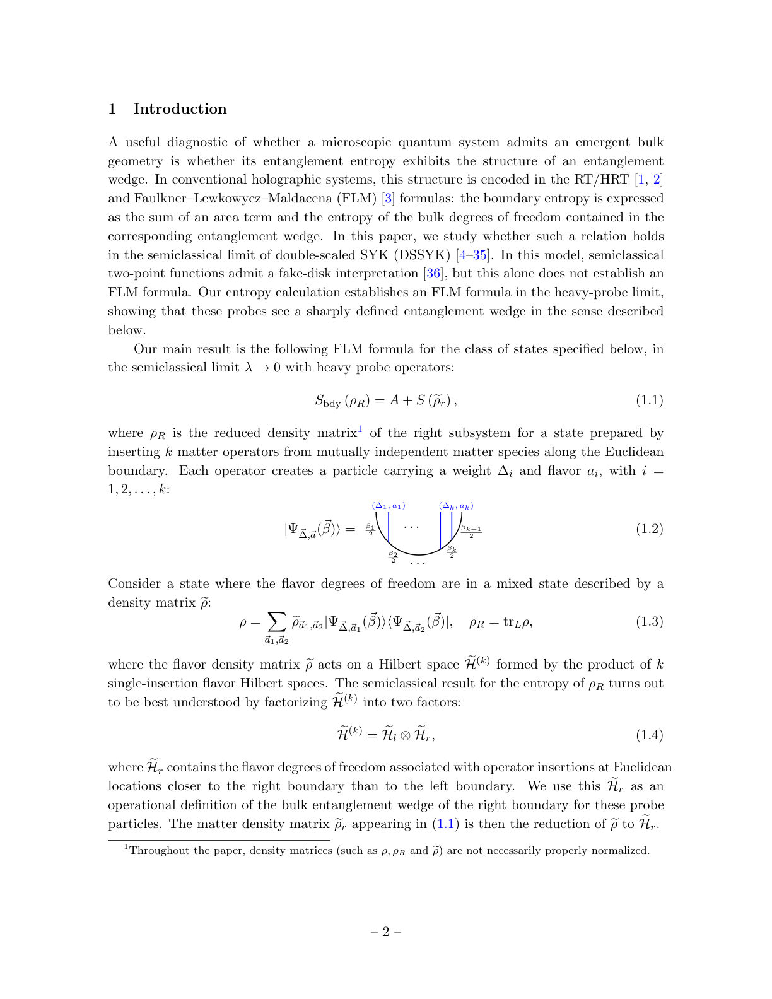
<figcaption class="paper-figure-caption"><b>Fig 2.</b> Low-resolution page preview, page 3</figcaption>
</figure>
<figure class="paper-figure-card">

<figcaption class="paper-figure-caption"><b>Fig 3.</b> Low-resolution page preview, page 4</figcaption>
</figure>
<figure class="paper-figure-card">

<figcaption class="paper-figure-caption"><b>Fig 4.</b> Low-resolution page preview, page 5</figcaption>
</figure>
<figure class="paper-figure-card">

<figcaption class="paper-figure-caption"><b>Fig 5.</b> Low-resolution page preview, page 6</figcaption>
</figure>
</div>

<p><strong>Summary.</strong> This paper investigates the entanglement structure of the double-scaled SYK model, aiming to confirm the existence of an entanglement wedge. By calculating the boundary entropy, the authors derive a formula analogous to the FLM relation, demonstrating that the model exhibits a sharply defined entanglement wedge in the semiclassical limit. This provides theoretical evidence linking entanglement properties to geometric structures in a quantum chaotic system.</p>
<p><strong>Why it may be interesting.</strong> The connection between entanglement structure (entropy) and geometric concepts like the entanglement wedge is a central theme in modern quantum gravity and condensed matter theory, providing a concrete, solvable model (SYK) to test these ideas.</p>
<details>
<summary>Detailed structure</summary>
<p><strong>Main problem.</strong> The study aims to determine if the entanglement structure of partially entangled thermal states in the double-scaled SYK model exhibits the structure of an entanglement wedge, analogous to holographic systems.</p>
<p><strong>Main result.</strong> The authors establish a Faulkner–Lewkowycz–Maldacena (FLM) formula, $S_{bdy}(
ho_R) = A + S(
ho_r)$, implying that the semiclassical DSSYK model possesses a sharply defined entanglement wedge.</p>
<p><strong>Method.</strong> The analysis employs replica calculations and examines the semiclassical behavior of general Euclidean $2n$-point functions, leading to a probabilistic proof of correlator factorization.</p>
<p><strong>Model / system.</strong> The system is the Double-scaled SYK (DSSYK) model, involving $N$ Majorana fermions. The study analyzes the entanglement entropy of partially entangled thermal states defined by matter insertions.</p>
<p><strong>Key observables.</strong> Boundary entropy ($S_{bdy}$), bulk matter entropy ($S(
ho_r)$), and the general $2n$-point correlation functions.</p>
<p><strong>Important parameters / regimes.</strong> The analysis is performed in the semiclassical limit ($\lambda 	o 0$) and the heavy-probe limit ($\Delta 	o \infty$).</p>
<p><strong>Assumptions / limitations.</strong> The main result is restricted to the semiclassical regime of DSSYK with heavy probes, and the geometric interpretation of the 'area' term $A$ is not derived.</p>
<p><strong>Paper structure.</strong> The paper develops the calculation by first establishing the FLM formula using replica methods, then analyzing the semiclassical factorization of correlators, and finally interpreting the sharp transitions in entropy as evidence for the entanglement wedge boundary.</p>
</details>
<details>
<summary>Abstract</summary>
<p>We study the entanglement structure of partially entangled thermal states in double-scaled SYK , allowing flavor degrees of freedom carried by matter insertions to be in an arbitrary mixed state. In the semiclassical limit, followed by the heavy-probe limit, our replica calculation gives a Faulkner--Lewkowycz--Maldacena formula: the boundary entropy decomposes into an `area' term (independent of the flavor state) and the bulk matter entropy in a corresponding entanglement wedge. Varying the Euclidean locations of the operator insertions produces sharp transitions in the boundary entropy, which we interpret as individual matter excitations crossing the boundary of the wedge and hence as evidence for a sharply defined entanglement wedge. To derive this result, we analyze the semiclassical behavior of general Euclidean $2n$-point functions and give a probabilistic proof of their factorization into sums over products of two-point functions. We also give a complementary derivation from exact spectral representations, using the semiclassical behavior of the quantum $6j$-symbol.</p>
</details>
<p><sub><a href="#top">↑ back to top</a></sub></p>

<p><a id="paper-2610.03438"></a></p>
<h3 id="an-exact-semidefinite-characterization-of-the-stoquasticity-cone-of-permutationally-invariant-bell-operators"><a href="http://arxiv.org/abs/2610.03438v1">An exact semidefinite characterization of the stoquasticity cone of permutationally invariant Bell operators</a></h3>
<p><strong>Authors:</strong> Jan Li, Owidiusz Makuta, Evert van Nieuwenburg, Jordi Tura<br>
<strong>Type:</strong> theory · <strong>Category:</strong> quantum information and computing · <strong>PDF:</strong> <a href="https://arxiv.org/pdf/2610.03438v1">https://arxiv.org/pdf/2610.03438v1</a><br>
<strong>Analysis basis:</strong> full PDF text, analyzed in chunks
<strong>Topic relevance:</strong> <code>quantum measurements</code> <strong>2/5</strong></p>
<div class="figure-strip-hint">↔ Scroll figures horizontally</div>
<div class="paper-figures-scroll">
<figure class="paper-figure-card">

<figcaption class="paper-figure-caption"><b>Fig 1.</b> FIG. 1. Geometry of the three-body interior stoquasticity condition. The first off-diagonal is the quadratic h1(x) = ax2 + bx + c, with a = ⃗A · ⃗α, b = ⃗B · ⃗α, c = ⃗C · ⃗α. We plot the slice a + c = −1 in the axes s = a −c and b. Each row k contributes one stoquasticity constraint drawn as a grey line tangent to the interior conic b2 ≤4ac, which on this slice is the circle s2 + b2 = 1 (dashed). Off this arc the supremum is attained at an endpoint, where the exact rows s = −1 (k=0) and b = 1 (k=n−1) take over. The shaded feasible set is bounded by these two edges together with the conic arc. As n grows from 6 to 60 the rows fill in, and the boundary collapses uniformly onto the conic arc,...</figcaption>
</figure>
</div>

<p><strong>Summary.</strong> This paper develops a rigorous mathematical characterization of the stoquasticity cone for Bell operators used in quantum correlation tests. By showing that the constraints simplify to a single semidefinite feasibility problem in the thermodynamic limit, it provides a powerful, general tool for analyzing quantum measurement constraints. This advances the theoretical understanding of Bell inequalities beyond simple polynomial bounds.</p>
<p><strong>Why it may be interesting.</strong> This work provides a powerful mathematical tool (semidefinite programming) to characterize physical constraints (stoquasticity) arising from quantum measurements, which is crucial for understanding the limits of quantum correlations.</p>
<details>
<summary>Detailed structure</summary>
<p><strong>Main problem.</strong> The paper aims to provide an exact characterization of the stoquasticity cone for permutationally invariant (PI) Bell operators.</p>
<p><strong>Main result.</strong> In the thermodynamic limit, the stoquasticity cone admits an exact semidefinite characterization, reducing the problem to a single semidefinite feasibility problem per off-diagonal element.</p>
<p><strong>Method.</strong> The authors exploit the observation that off-diagonal matrix elements are governed by a single univariate polynomial, which allows the reduction of numerous inequalities to a single Linear Matrix Inequality (LMI).</p>
<p><strong>Model / system.</strong> The study concerns Bell correlations measured in atomic ensembles, modeled by PI Bell operators acting on $n$ qubits, analyzed in the symmetric subspace.</p>
<p><strong>Key observables.</strong> The coefficients ($\vec{\alpha}$) of the PI Bell operators, and the resulting stoquasticity condition ($\langle i| H |j
angle \le 0$ for $i 
eq j$).</p>
<p><strong>Important parameters / regimes.</strong> The system size $n$ (analyzed in the thermodynamic limit), and the operator order (e.g., two-body vs. three-body).</p>
<p><strong>Assumptions / limitations.</strong> The characterization is shown to be exact only in the thermodynamic limit ($n 	o \infty$), and the analysis relies on the polynomial structure of the matrix elements.</p>
<p><strong>Figures summary.</strong> Not specified.</p>
<p><strong>Paper structure.</strong> The paper establishes the stoquasticity condition, derives the polynomial structure of off-diagonal elements, and then uses this structure to collapse the constraints into a single semidefinite feasibility problem.</p>
</details>
<details>
<summary>Abstract</summary>
<p>Bell correlations have been detected in atomic ensembles ranging from hundreds to hundreds of thousands of particles, witnessed by the permutationally invariant (PI) Bell operators. For all the operators realized so far, the maximally violating state can be brought, in a suitable basis, into a nonnegative-amplitude form. In that basis, the Bell operator is stoquastic. The coefficients parametrising these operators that at the same time lead to stoquasticity form a convex cone, the so-called stoquasticity cone. Its characterization had remained open beyond two-body operators, as for many-body operators the number of inequalities grows with the system size $n$. In this work we show that, in the thermodynamic limit, the stoquasticity cone admits an exact semidefinite characterization, valid at any operator order. The key observation is that, along each off-diagonal, the matrix elements are the values of a single univariate polynomial. Being univariate, this condition is equivalent to a linear matrix inequality, with no relaxation hierarchy. Therefore, deciding stoquasticity becomes a single semidefinite feasibility problem. As its lowest-degree instances, this description recovers the known three-hyperplane characterization for two-body operators and yields, for three-body operators, a curved boundary.</p>
</details>
<p><sub><a href="#top">↑ back to top</a></sub></p>

<p><a id="paper-2610.03113"></a></p>
<h3 id="certification-of-high-dimensional-entanglement-in-continuous-variable-systems"><a href="http://arxiv.org/abs/2610.03113v1">Certification of high-dimensional entanglement in continuous-variable systems</a></h3>
<p><strong>Authors:</strong> Ida Mishra, Simon Morelli, Klára Baksová, Phila Rembold, Nicolai Friis<br>
<strong>Type:</strong> theory · <strong>Category:</strong> quantum information and computing · <strong>PDF:</strong> <a href="https://arxiv.org/pdf/2610.03113v1">https://arxiv.org/pdf/2610.03113v1</a><br>
<strong>Analysis basis:</strong> full PDF text, analyzed in chunks
<strong>Topic relevance:</strong> <code>quantum measurements</code> <strong>2/5</strong></p>
<div class="figure-strip-hint">↔ Scroll figures horizontally</div>
<div class="paper-figures-scroll">
<figure class="paper-figure-card">

<figcaption class="paper-figure-caption"><b>Fig 1.</b> FIG. 1. Fidelities and SN thresholds for two-mode squeezed thermal states. The exact fidelity F (pink, solid) between TMST states ρTMST(r, β) and the optimal target state ∣TMSV(s = sopt)⟩from Eq. (49), the lower bound ˜Fopt (black, dashed) from Eq. (51), and the corresponding SN thresholds Bk (blue) from Eq. (53) are shown as functions of r for different values of β with initial-state mixedness increasing left to right: (a) β = 10, (b) β = 5, and (c) β = 3.33 in units of kB/(̵hω). Although both F and ˜Fopt depend on β and r, the former only via sopt = sopt(r, β), the changes with varying r but fixed β are difficult to resolve for the high-purity regime we are interested in here. For...</figcaption>
</figure>
<figure class="paper-figure-card">

<figcaption class="paper-figure-caption"><b>Fig 2.</b> FIG. 2. Detected Schmidt number for TMST states: The SNs, k, certified using the fidelity lower bound for TMST states in Eq. (51) are shown (using a logarithmic scale on the vertical axis) as a function of r for different β values. The SN k0 = 100, indicated by a dashed line, is certified at minimum squeezing r1 = 2.31, r2 = 2.78, r3 = 3.11, and r4 = 3.41 for β = 10, 5, 3.33, and 2.5 (left to right, top to bottom), respectively.</figcaption>
</figure>
<figure class="paper-figure-card">

<figcaption class="paper-figure-caption"><b>Fig 3.</b> FIG. 3. Comparisons for TMST states: The curves show the detected SN k for TMST states based on different certification methods: linear Gaussian SN witnesses explained in Sec. III.C (dashed dark mustard curves), EoF-based SN witnesses as discussed in Sec. III.B (dashed mint curves), SN witnesses based on the exact fidelity (pink solid curves) between the states and corresponding optimal target state from Eq. (49), and on the fidelity lower bound (solid dark-blue curves) from Eq. (51). The individual panels compare the behaviour of these certification methods at different β values: (a) β = 10; (b) β = 5; and (c) β = 0.33. The vertical axes indicating the certified SN k use a logarithmic...</figcaption>
</figure>
<figure class="paper-figure-card">

<figcaption class="paper-figure-caption"><b>Fig 4.</b> FIG. 4. Critical squeezing for certifying k0 for TMST states: The graph shows the required squeezing r, needed for different bounds to detect SN k0 = 100 for a range of β.</figcaption>
</figure>
<figure class="paper-figure-card">

<figcaption class="paper-figure-caption"><b>Fig 5.</b> FIG. 5. Detected Schmidt numbers for PAD TMSV states: The plot shows the detected SN for the family of non-Gaussian states ∣Φ(α, r)⟩in Eq. (55) as a function of the squeezing parameter r for selected values of the displace- ment α = 20, 40, 60, and 80 (bottom to top). The vertical axis shows the SN up to k = 300 on a logarithmic scale. The dashed horizontal line indicates the detection of SN k0 = 100.</figcaption>
</figure>
</div>

<p><strong>Summary.</strong> This paper develops novel, experimentally accessible methods to certify high-dimensional entanglement in continuous-variable quantum systems. By basing entanglement witnesses on measurable first and second statistical moments, it overcomes the limitations of requiring full state tomography. The results provide quantitative comparisons of these new bounds against established methods using specific squeezed and thermal state examples.</p>
<p><strong>Why it may be interesting.</strong> This work provides a practical, measurement-efficient theoretical tool for quantifying entanglement in CV systems, which is highly relevant for quantum optics and quantum information processing.</p>
<details>
<summary>Detailed structure</summary>
<p><strong>Main problem.</strong> The paper addresses the challenge of certifying high-dimensional entanglement in continuous-variable (CV) quantum systems, where direct measurements are often impractical.</p>
<p><strong>Main result.</strong> The authors introduce and assess new fidelity bounds for detecting the Schmidt number based only on the first and second statistical moments of the quadrature operators.</p>
<p><strong>Method.</strong> They derive entanglement witnesses by bounding the trace distance between the unknown state and pure Gaussian states, utilizing the measured first and second moments (characterized by the Covariance Matrix).</p>
<p><strong>Model / system.</strong> The focus is on CV quantum systems, particularly mode-entangled pairs of harmonic oscillator degrees of freedom. The analysis tests the method on Gaussian states like two-mode squeezed thermal states and non-Gaussian states like photon-added displaced squeezed vacuum states.</p>
<p><strong>Key observables.</strong> Schmidt number (SN), Fidelity ($F$), First and second statistical moments, Covariance Matrix ($\gamma$), and entanglement witnesses.</p>
<p><strong>Important parameters / regimes.</strong> Squeezing parameters ($r, s$), inverse temperature ($eta$), and the dimensionality of the system ($M$).</p>
<p><strong>Assumptions / limitations.</strong> The method relies on bounding the trace distance using inequalities derived from the first and second moments, which is advantageous as it avoids full state tomography.</p>
<p><strong>Figures summary.</strong> The notes detail calculations for the fidelity between specific state families (TMST and TMSV) and the determination of optimal test parameters ($
u_1$) for the entanglement witnesses.</p>
<p><strong>Paper structure.</strong> The paper establishes the CV framework using the CM, details the new fidelity-based SN bounds by comparing them to existing methods (EoF, linear witnesses), and finally applies these techniques to calculate and compare results for specific Gaussian and non-Gaussian state families.</p>
</details>
<details>
<summary>Abstract</summary>
<p>The dimensionality of entanglement in high-dimensional quantum systems is quantified by the Schmidt number, whose large value signals potential advantages for quantum communication and quantum computation. A commonly used approach to practical Schmidt-number detection in finite-dimensional systems is based on the estimation of fidelities to pure states with large entanglement dimensionality or lower bounds to these fidelities. However, for mode-entangled continuous-variable systems, the corresponding measurements are typically difficult to realize. Here, we introduce and assess fidelity bounds for Schmidt-number detection based on practically more accessible measurements of the first and second statistical moments of arbitrary continuous-variable quantum states. We provide analytical formulas that allow evaluating these bounds and test them for families of Gaussian and non-Gaussian states, including two-mode squeezed thermal states and photon-added displaced two-mode squeezed vacuum states. We compare our bounds to other methods for the certification of high-dimensional entanglement based on the same measurements.</p>
</details>
<p><sub><a href="#top">↑ back to top</a></sub></p>

<p><a id="paper-2610.03114"></a></p>
<h3 id="circuit-growth-and-subspace-read-out-in-quantum-selected-configuration-interaction-separating-the-hartree-fock-determinant"><a href="http://arxiv.org/abs/2610.03114v1">Circuit growth and subspace read-out in quantum-selected configuration interaction: Separating the Hartree-Fock determinant</a></h3>
<p><strong>Authors:</strong> Ayaka Fujimoto, Norifumi Matsumoto, Shota Kanasugi, Kazunori Maruyama, Hirotaka Oshima<br>
<strong>Type:</strong> theory · <strong>Category:</strong> strongly correlated electrons · <strong>PDF:</strong> <a href="https://arxiv.org/pdf/2610.03114v1">https://arxiv.org/pdf/2610.03114v1</a><br>
<strong>Analysis basis:</strong> full PDF text, analyzed in chunks
<strong>Topic relevance:</strong> <code>quantum measurements</code> <strong>2/5</strong></p>
<div class="figure-strip-hint">↔ Scroll figures horizontally</div>
<div class="paper-figures-scroll">
<figure class="paper-figure-card">

<figcaption class="paper-figure-caption"><b>Fig 1.</b> FIG. 1. Schematic of one iteration of the scheme. Orange boxes mark the parts that differ from ADAPT-QSCI, blue boxes the parts it inherits unchanged, and green boxes the two operations that append gates to the quantum circuit, namely the preparation of the initial state and the update of the circuit in the loop. Here dx is the first-order perturbation coefficient of configuration x and M0 the set of the m0 configurations with the largest |dx| excluding the Hartree–Fock determinant, Gl and γ∗ l are the generator and angle of the lth preparation rotation, and Uk is the circuit that prepares |Φk⟩.</figcaption>
</figure>
<figure class="paper-figure-card">

<figcaption class="paper-figure-caption"><b>Fig 2.</b> FIG. 2. Energy error against the cumulative CNOT count. Top row: noiseless sampler, a single deterministic trajectory per method. Bottom row: the budgets of Ref. [12], Ns = 105 for H4 and 5 × 106 for H6, median over 20 trials with the interquartile range shaded, each trial run to a fixed number of iterations, 12 on H4 and 40 on H6, chosen to cover the point at which the baseline reaches chemical accuracy; every trial reached it. Dashed horizontal lines: chemical accuracy, 1.6 mHa. Dotted vertical lines and labels: the total CNOT count at k∗. The curves of the present scheme begin at 12 CNOTs, the cost of preparing the m0 = 2 initial state.</figcaption>
</figure>
<figure class="paper-figure-card">

<figcaption class="paper-figure-caption"><b>Fig 3.</b> FIG. 3. Shot counts required to reach a target coverage αGS, for the state produced by ADAPT-QSCI at k∗and for the same state with the Hartree–Fock outcome removed from the sampler and supplied classically. The targets lie below αGS(TR), which is 0.999920 for H4 and 0.999904 for H6. Dashed lines: the prediction rpred of Eq. (25). 200 trials.</figcaption>
</figure>
<figure class="paper-figure-card">

<figcaption class="paper-figure-caption"><b>Fig 4.</b> FIG. 4. (a) Probability pchem that a single run achieves chemical accuracy, for the four frozen states compared at a matched iteration, against the number of shots drawn from each. 400 trials. (b) Post-selected probabilities of the two H6 states at k = 13, ordered by decreasing probability. Triangles: the smallest probability carried by TR. Dotted line: 1/Ns at the budget of Ref. [12].</figcaption>
</figure>
<figure class="paper-figure-card">

<figcaption class="paper-figure-caption"><b>Fig 5.</b> FIG. 5. Iterations k∗to chemical accuracy against the number of shots per iteration, median over 20 trials with the interquartile range shaded. Annotations give the number of trials that failed to converge, those trials being entered at the iteration limit. Insets: the ratio of total shot counts Ntot, with unity marked. Dashed vertical lines: the budgets of Ref. [12].</figcaption>
</figure>
</div>

<p><strong>Summary.</strong> This paper improves the Quantum-selected Configuration Interaction (QSCI) algorithm by recognizing and removing measurement redundancy caused by the dominant Hartree-Fock configuration. By classically supplying the HF determinant, the authors derive a more efficient selection criterion. The results show significant resource savings in terms of quantum circuit depth and measurement shots compared to existing adaptive methods for calculating molecular ground-state energies.</p>
<p><strong>Why it may be interesting.</strong> This work directly addresses resource scaling and algorithmic efficiency for simulating strongly correlated electronic systems, which is a major bottleneck in quantum chemistry.</p>
<details>
<summary>Detailed structure</summary>
<p><strong>Main problem.</strong> Predicting accurate ground-state energies of molecular Hamiltonians, which is central to electronic structure theory.</p>
<p><strong>Main result.</strong> The proposed scheme achieves chemical accuracy with significantly fewer CNOT gates and fewer measurement shots compared to ADAPT-QSCI at comparable shot budgets.</p>
<p><strong>Method.</strong> The authors modify the Quantum-selected Configuration Interaction (QSCI) approach by classically incorporating the Hartree-Fock determinant into the diagonalization subspace, thereby reducing measurement redundancy.</p>
<p><strong>Model / system.</strong> The study focuses on molecular Hamiltonians, specifically applied to small hydrogen molecules ($\mathrm{H}_4$ and $\mathrm{H}_6$), using electronic structure theory concepts.</p>
<p><strong>Key observables.</strong> Ground-state energy, CNOT gate count, total measurement shots, and the required number of iterations ($k^*$) to reach chemical accuracy.</p>
<p><strong>Important parameters / regimes.</strong> The per-iteration shot budget ($N_s$) is identified as a key design variable governing resource savings; the comparison's advantage depends on this budget.</p>
<p><strong>Assumptions / limitations.</strong> The advantage of the new scheme is contingent on the per-iteration shot budget, and the comparison is made assuming no device noise.</p>
<p><strong>Figures summary.</strong> Figure 1 schematically compares the circuit structure of the proposed scheme against ADAPT-QSCI, highlighting added and inherited gates.</p>
<p><strong>Paper structure.</strong> The paper first identifies the redundancy in standard QSCI/ADAPT-QSCI methods due to the HF determinant. It then proposes the classical separation of the HF determinant and derives a new, consistent selection criterion. Finally, it compares the resource costs (gates/shots) against ADAPT-QSCI for $\mathrm{H}_4$ and $\mathrm{H}_6$.</p>
</details>
<details>
<summary>Abstract</summary>
<p>Predicting many molecular properties requires accurate ground-state energies of molecular Hamiltonians. Quantum-selected configuration interaction (QSCI) obtains such energies by measuring an input state to select important electronic configurations and classically diagonalizing the Hamiltonian in the subspace they span. ADAPT-QSCI, an adaptive extension of QSCI, improves the input state through iterative circuit growth. For single-reference molecules, the sampling distribution is dominated by the Hartree-Fock (HF) configuration, so most measurements reproduce a configuration already known. We reduce this redundancy by placing the HF configuration in the diagonalization subspace classically, before any measurement. This invalidates the operator-selection criterion of ADAPT-QSCI, and we derive a consistent replacement with energy and gradient in closed form, adding no query to the quantum device. At the per-iteration shot budgets previously used for ADAPT-QSCI, the proposed scheme reaches chemical accuracy with approximately $63\%$ and $43\%$ of the CNOT gates for $\mathrm{H}_4$ and $\mathrm{H}_6$, and $44\%$ and $40\%$ of the total shots. The advantage depends on the budget, however: in the infinite-shot limit the $\mathrm{H}_4$ CNOT count increases to $125\%$ of that of ADAPT-QSCI. These results identify the per-iteration shot budget as a key design variable governing resource savings in QSCI-based algorithms.</p>
</details>
<p><sub><a href="#top">↑ back to top</a></sub></p>

<p><a id="paper-2610.03644"></a></p>
<h3 id="clarifications-on-the-experimental-status-of-real-quantum-theory"><a href="http://arxiv.org/abs/2610.03644v1">Clarifications on the Experimental Status of Real Quantum Theory</a></h3>
<p><strong>Authors:</strong> Timothée Hoffreumon, Mischa P. Woods<br>
<strong>Type:</strong> theory · <strong>Category:</strong> other · <strong>PDF:</strong> <a href="https://arxiv.org/pdf/2610.03644v1">https://arxiv.org/pdf/2610.03644v1</a><br>
<strong>Analysis basis:</strong> full PDF text, analyzed in chunks
<strong>Topic relevance:</strong> <code>quantum measurements</code> <strong>2/5</strong></p>
<div class="figure-strip-hint">↔ Scroll figures horizontally</div>
<div class="paper-figures-scroll">
<figure class="paper-figure-card">

<figcaption class="paper-figure-caption"><b>Fig 1.</b> Figure 1: Pen analogy for the distinction between preparation and certification. In both toy worlds [toy world 1: (a)–(b); toy world 2: (c)–(d)] the same analogue of Postulate 4 applies: a preparation known to be independent is assigned to the red, product-state class. Green represents non-product but operationally independent, i.e., correlated, preparations. Thickness represents an operational degree of freedom visible in both theories. In the full-colour QT analogy, panels (a) and (b), the observer can distinguish all four combinations of colour and thickness. Two red pens can therefore be prepared and verified as red, allowing the postulate to identify the preparation with the product,...</figcaption>
</figure>
<figure class="paper-figure-card">

<figcaption class="paper-figure-caption"><b>Fig 2.</b> Figure 2: Operational independence is an observational classification, not a postulate. The set OK consists of states locally indistinguishable from the product of their marginals. Local tomography makes PC = OC in QT. In RQT, PR ⊊OR; the additional real states are non- product states with the same locally accessible statistics as product states.</figcaption>
</figure>
</div>

<p><strong>Summary.</strong> This paper argues that an experiment claiming to falsify Real Quantum Theory (RQT) by violating a specific bound is flawed because it relies on an uncertified assumption: that physically independent preparations must be mathematically product states. The authors demonstrate that RQT can accommodate non-product, operationally independent states that yield the same statistics as QT, thus preserving RQT's viability.</p>
<p><strong>Why it may be interesting.</strong> This work is highly relevant to foundational quantum physics, particularly concerning the interpretation of experimental results in multipartite entanglement tests and the limits of local realism when moving beyond standard quantum mechanics.</p>
<details>
<summary>Detailed structure</summary>
<p><strong>Main problem.</strong> The paper addresses the claim that a specific bilocal network experiment can experimentally falsify Real Quantum Theory (RQT) without falsifying standard Quantum Theory (QT). It focuses on the fundamental distinction between theoretically assumed product-state independence and experimentally verifiable operational independence.</p>
<p><strong>Main result.</strong> The experiment fails to falsify RQT because the observed quantum statistics can be reproduced by RQT using non-product, operationally independent source states. This shows that the required product-source premise is uncertified by the experimental data.</p>
<p><strong>Method.</strong> The authors compare theoretical bounds (e.g., swapped-CHSH functional) derived under different assumptions (product vs. operational independence) and use analogies (like the pen analogy) to distinguish between formal postulates and physical observability.</p>
<p><strong>Model / system.</strong> The analysis compares predictions from standard Quantum Theory (QT) against a proposed Real Quantum Theory (RQT) in the context of bilocal network experiments involving three measuring parties (A, B, C). The core focus is on the assumptions made regarding the preparation of the initial entangled state.</p>
<p><strong>Key observables.</strong> Swapped-CHSH functional (T), Bell-like bounds, and the comparison between the maximum achievable values under QT vs. RQT.</p>
<p><strong>Important parameters / regimes.</strong> The distinction between 'product-state independence' (a formal postulate) and 'operational independence' (an observable condition).</p>
<p><strong>Assumptions / limitations.</strong> The primary assumption challenged is that 'independent physical preparations' must mathematically correspond to a product state ($\omega_{AB_1B_2C} = 
ho_{AB_1} \otimes \sigma_{B_2C}$).</p>
<p><strong>Figures summary.</strong> Figure 1 uses a pen analogy to illustrate the difference between product-state preparations (red pens) and non-product, operationally independent preparations (green pens) in the context of QT vs. RQT. Figure 2 compares the sets of product and operationally independent states in QT vs. RQT.</p>
<p><strong>Paper structure.</strong> The paper systematically refutes the premise of the conflicting Nature paper by first clarifying the distinction between product-state and operational independence, showing that the experimental test only rules out RQT <em>plus</em> the product-state assumption, not RQT itself.</p>
</details>
<details>
<summary>Abstract</summary>
<p>In our previous paper on the matter, we proved that real quantum theory (RQT) cannot be experimentally falsified without the experiment falsifying quantum theory (QT) as well. Our result is in direct contradiction to the central claim of an article by Renou et al., published in Nature [600, 625--629 (2021)], reporting a bilocal network experiment that could falsify real quantum theory without falsifying quantum theory.   The purpose of this note is to address several seemingly natural attempts to recover the experimental conclusion of Renou et al. We first explain how these results, although based on nonlocality experiments, are far from a Bell-like level of proof. Then we explain why the proposed experiment requires an experimentally untestable premise about independent preparations necessarily being represented as product states. Finally, we discuss some concerns that lie outside the scope of both results.</p>
</details>
<p><sub><a href="#top">↑ back to top</a></sub></p>

<p><a id="paper-2610.03686"></a></p>
<h3 id="efficient-block-encoding-of-structured-hamiltonians-by-separating-where-and-what"><a href="http://arxiv.org/abs/2610.03686v1">Efficient Block Encoding of Structured Hamiltonians by Separating Where and What</a></h3>
<p><strong>Authors:</strong> Alessandro Summer, François Jamet<br>
<strong>Type:</strong> theory · <strong>Category:</strong> strongly correlated electrons · <strong>PDF:</strong> <a href="https://arxiv.org/pdf/2610.03686v1">https://arxiv.org/pdf/2610.03686v1</a><br>
<strong>Analysis basis:</strong> full PDF text, analyzed in chunks
<strong>Topic relevance:</strong> <code>analog quantum simulation</code> <strong>2/5</strong></p>
<div class="figure-strip-hint">↔ Scroll figures horizontally</div>
<div class="paper-figures-scroll">
<figure class="paper-figure-card">

<figcaption class="paper-figure-caption"><b>Fig 1.</b> FIG. 1. Permute–act–unpermute block encoding of a structured Hamiltonian. Prepare encodes the support address j and operator label b. The address-controlled per- mutation Πj brings the selected support to the fixed target register T , where the shared target action P applies the oper- ator labelled by b. Finally Π−1 j restores the system register. Thus, the permutation selects where the term acts, while the target action selects what is applied.</figcaption>
</figure>
<figure class="paper-figure-card">

<figcaption class="paper-figure-caption"><b>Fig 2.</b> FIG. 2. Site groups that fix the permutation. Sites of one group share a colour, and one selected support is highlighted as the target register T . (a) Nearest-neighbour ring, χ = 2 and nT = 2. (b) Square-lattice plaquettes, χ = 4 and nT = 4. (c) All-to-all pairs, χ = N and nT = 2, drawn for N = 6. (d) One swap tree per group gathers the selected site of that group at its root. For the four groups of (b), the roots form T itself, where P applies P (b) T . When χ exceeds the support size, a second network moves the roots that hold the selected support onto T .</figcaption>
</figure>
<figure class="paper-figure-card">

<figcaption class="paper-figure-caption"><b>Fig 3.</b> FIG. 4. Permute–act–unpermute block encoding of the Heisenberg ring for even N. The alias sampler Aµ prepares the operator label (f, ξ, ζ), while the control generator GH prepares the position j and the auxiliary controls consumed by the permutation. The odd and even swap trees, connected by the address toggle Tog, bring the selected nearest-neighbour pair to the fixed target register T = (q0, q1). The target action PH applies the operator specified by the label, after which the permutation is reversed. The Clifford diagonal Dclass supplies the remaining Pauli phases and coefficient signs. Figs. 12, 13 and 16 to 19 give the circuit decompositions of the corresponding blocks. All circuits...</figcaption>
</figure>
<figure class="paper-figure-card">

<figcaption class="paper-figure-caption"><b>Fig 4.</b> FIG. 3. Closed and bridged CSWAP pairs. (a) In a closed pair, the temporary work bit is erased after the forward CSWAP and recomputed for the inverse one, requiring two 4 T openings. (b) In a bridged pair, the work bit is retained across the target action and updated by the repair Xcδ ω before being reused by the inverse CSWAP. The pair therefore requires only one opening when the repair is Clifford. (c) Permute– act–unpermute Select with bridged CSWAPs. The forward permutation leaves its work bits live across the target action. The repair predicates, derived from the prepared address and label, update them before the inverse permutation consumes them.</figcaption>
</figure>
<figure class="paper-figure-card">

<figcaption class="paper-figure-caption"><b>Fig 5.</b> FIG. 5. Resources for one uncontrolled block-encoding query of the Heisenberg ring at even N. (a) Total T count, with the Nrot arbitrary rotations synthesised at εsynth = 10−3 and alias precision µ = 10. (b) Peak ancilla count Apeak, excluding the N system qubits, with µ = 10. (c) Leading resource expressions, up to O(log N) corrections in T and O(1) corrections in Apeak; the key beside each row identifies its curves in (a) and (b). Curves in (a) and (b) evaluate the corresponding resource expressions at every even N; markers show compiled counts for this work, the flat walk, and the product-wise walk at the sizes indicated, while the remaining constructions use the gate inventories of...</figcaption>
</figure>
</div>

<p><strong>Summary.</strong> This paper details a method to efficiently encode structured Hamiltonians for quantum simulation by separating the spatial support of an interaction from the local operation applied. This 'permute-act-unpermute' circuit structure significantly reduces the required non-Clifford gate count (T gates) by changing the cost scaling from multiplicative to additive. The results show substantial cost reductions for models like the Heisenberg ring, advancing the practical simulation of complex quantum materials.</p>
<p><strong>Why it may be interesting.</strong> This work provides concrete, resource-aware quantum circuit techniques for simulating complex Hamiltonians relevant to strongly correlated materials, directly impacting the feasibility of quantum simulation algorithms.</p>
<details>
<summary>Detailed structure</summary>
<p><strong>Main problem.</strong> The primary goal is to reduce the non-Clifford gate cost associated with fault-tolerant block encodings of structured Hamiltonians.</p>
<p><strong>Main result.</strong> By separating the action ('what') from the support geometry ('where') using permute-act-unpermute circuits, the T-gate count scales additively with system size rather than multiplicatively with the number of terms.</p>
<p><strong>Method.</strong> The authors construct specialized quantum circuits utilizing permute-act-unpermute sequences and introduce a 'bridged CSWAP' gate to optimize the gate count, especially for Pauli terms.</p>
<p><strong>Model / system.</strong> The work applies to simulating quantum many-body systems described by structured Hamiltonians, exemplified by nearest-neighbour interactions (Heisenberg ring) and all-to-all couplings (Anderson impurity model).</p>
<p><strong>Key observables.</strong> T count (non-Clifford cost), CSWAP count, and the scaling factor of the cost relative to system size N.</p>
<p><strong>Important parameters / regimes.</strong> Support geometry (determining the CSWAP density S), system size N, and the number of impurities/orbitals ($n_{	ext{imp}}$).</p>
<p><strong>Assumptions / limitations.</strong> The approach assumes that the coefficients of the Hamiltonian terms do not require translational symmetry or factorized coefficients, and comparisons use the lowest-cost compiled baselines.</p>
<p><strong>Figures summary.</strong> Figures illustrate the permute–act–unpermute block encoding structure, the use of swap trees for different support geometries (nearest-neighbor, all-to-all), and cost comparisons between various comparator constructions.</p>
<p><strong>Paper structure.</strong> The paper develops the theory by first establishing the permute-act-unpermute framework, then optimizing the permutation cost based on support geometry, and finally applying this to specific models like the Heisenberg ring and Anderson impurity model to quantify the cost reduction.</p>
</details>
<details>
<summary>Abstract</summary>
<p>Fault-tolerant block encodings of structured Hamiltonians can reduce their non-Clifford cost in SELECT by selecting where an operator acts separately from what is applied. We construct permute-act-unpermute circuits whose CSWAP networks exploit the support geometry: a selected support is brought to a fixed target register, a shared local circuit acts there, and the permutation is undone. For supports of fixed size, the $T$ count of SELECT then grows with the system size rather than with the number of terms, without requiring translational symmetry or factorised coefficients. For two-site supports, we establish and attain the minimum CSWAP count within address-controlled networks of site transpositions. Compiled for Pauli terms, these circuits use $8SN+O(\log N)$ $T$ gates with $O(\log N)$ permutation work qubits, where $N$ is the number of system qubits and $S$ is determined by the support geometry, with $S=1$ for nearest-neighbour interactions and $S=3/2$ for all-to-all pairs. We also introduce a bridged CSWAP that retains and repairs a temporary AND across the target action. When the repair is Clifford, it halves the $T$ count of a matched forward-inverse CSWAP pair at the cost of one retained work qubit. For a Heisenberg ring, the complete block-encoding query reduces the $T$ count by a factor approaching 3 as the system size grows. For a five-orbital Anderson impurity model, which combines nearest-neighbour and all-to-all support geometries, the reduction is about 1.7 at large bath sizes. Both comparisons use the lowest-cost compiled baselines considered, at unchanged block-encoding normalisation and comparable peak ancilla counts.</p>
</details>
<p><sub><a href="#top">↑ back to top</a></sub></p>
<hr>
<p>
<a href="index.html">← Index</a>
 · <a href="papers_03.html">← Previous</a> · <a href="papers_05.html">Next →</a>
</p>
<hr>

</body>
</html>
